freiesMagazin Mai 2008
Topthemen dieser Ausgabe
LinCity-NG
Wer kennt sie nicht? Wer hat sie noch nie gespielt? Die Städtebausimulation SimCity hat Generationen von Computerspielern stundenlang Freude beschert. Auch Linuxnutzer haben dank LinCity-NG die Möglichkeit, diesen Klassiker neu zu erleben. Das Spiel wird in dieser Ausgabe kurz vorgestellt. (weiterlesen)
andLinux - Das Schaf im Wolfspelz
Wie oft vermisst man als Linux-Anwender unter Windows die gewohnten Programme seiner Linux-Distribution? Einige Anwendungen wie Firefox, OpenOffice.org oder Pidgin gibt es auch nativ für Windows, aber auf andere wie Konqueror oder Nautilus kann man nur über ein in einer Virtuellen Maschine installiertes Linux-System zugreifen. Hier geht andLinux einen anderen Weg, indem es Linux-Programme unter Windows fast nativ zur Verfügung stellt. (weiterlesen)
sidux - aktuell, schnell und sicher
Wer gerne ein aktuelles und schnelles Betriebssystem mit aktueller Software hat, kommt an sidux kaum vorbei. sidux ist voll kompatibel zu Debian Unstable/Sid, dem ,,instabilen'' Zweig von Debian, wurde jedoch mit eigenem Kernel und Skripten so anwenderfreundlich wie möglich entwickelt. So ist es selbst ungeübten Nutzern, welche sich nicht vor der Konsole scheuen und lernwillig sind, möglich, ein stets aktuelles und - viel wichtiger - stabiles System zu nutzen. (weiterlesen)
Zum Index
Inhalt
Nachrichten
Distributionen aktuell
Adobe öffnet Flash-Spezifikation
GNOME- und KDE-Konferenzen sollen gemeinsam stattfinden
Hilferuf des ,,Debian Package of the Day''-Projektes
Kernel-Rückblick
VIA kündigt Open-Source-Treiberentwicklung an
OpenOffice.org 2.4 beseitigt Sicherheitslücken und veröffentlicht Portable-Version
Neues aus der Welt der Mobilgeräte
OOXML - Die unendliche Geschichte
Anleitungen
Motorola A1200 - Das tragbare Linux-System, Teil 2
Systemwiederherstellung
Tipps und Tricks für den Alltag mit Linux
Software
LinCity-NG
Linux allgemein
andLinux - Das Schaf im Wolfspelz
Meine Welt mit Fluxbox
sidux - aktuell, schnell und sicher
Die Reiche Debians
Interview mit Xubuntu-Entwickler Cody Somerville
Veranstaltungen
Interna
Editorial
Leserbriefe
Konventionen
Vorschau
Impressum
Soweit nicht anders angegeben, stehen alle Artikel und Beiträge in freiesMagazin unter der GNU-Lizenz für freie Dokumentation (FDL). Das Copyright liegt beim jeweiligen Autor. freiesMagazin unterliegt als Gesamtwerk ebenso der GNU-Lizenz für freie Dokumentation (FDL) mit Ausnahme von Beiträgen, die unter einer anderen Lizenz hierin veröffentlicht werden. Das Copyright liegt bei Eva Drud. Es wird die Erlaubnis gewährt, das Werk/die Werke (ohne unveränderliche Abschnitte, ohne vordere und ohne hintere Umschlagtexte) unter den Bestimmungen der GNU Free Documentation License, Version 1.2 oder jeder späteren Version, veröffentlicht von der Free Software Foundation, zu kopieren, zu verteilen und/oder zu modifizieren. Die xkcd-Comics stehen separat unter der Creative Commons-Lizenz CC-BY-NC. Das Copyright liegt bei Randall Munroe.
Zum Index
Editorial
Liebe Leserin, lieber Leser! Immer wieder erreichen uns Anfragen von Lesern, die wissen wollen, wie hoch die Downloadzahlen für freiesMagazin sind. Wir wollen dieses Editorial nutzen, um allen einen Einblick in die Entwicklung der letzten Monate zu geben. Die Daten sind bereinigt, sodass nur abgeschlossene Dateiübertragungen gezählt werden. Was wir natürlich nicht wissen und daher auch nicht korrigieren können, ist, ob jeder Leser wirklich nur einmal herunterlädt oder eine Ausgabe in mehreren Etappen liest und jeweils nur öffnet und nicht lokal speichert. Ähnlich ist es natürlich bei der Mobilversion. Wie viele der Aufrufe der jeweiligen HTML-Seite nun zu Bots gehören oder nur angesurft und nicht gelesen werden, ist nicht herauszufinden. Da diese Unsicherheitsfaktoren aber für jede Ausgabe gleich sind, ist die Entwicklung über die letzten Monate auf jeden Fall aussagekräftig. Wir freuen uns jedenfalls, dass freiesMagazin mittlerweile eine so große Leserschaft hat. Zum Vergleich: Die ersten zwei Ausgaben lagen nur bei jeweils unter 2000 Downloads, schon nach den ersten Monaten konnten wir einen großen Anstieg verzeichnen. Danach fluktuieren die Zahlen mehr oder minder stark, was unter anderem auch am Serverausfall im September 2007 lag. Inzwischen sind wir bei über 10.000 Downloads pro neuer Ausgabe. Wir möchten uns an dieser Stelle daher auch bei allen unseren Lesern bedanken, die uns die Treue gehalten haben und freuen uns über jeden, der Gefallen an freiesMagazin findet. Natürlich darf man aber auch die vielen fleißigen Autoren nicht vergessen, denn ohne die wäre freiesMagazin nur ein leeres Stück PDF. In den letzten zwei Jahren haben zirka 50 Autoren, Newsschreiber und Korrektoren am Magazin gearbeitet. Vielen Dank dafür! Natürlich freuen wir uns auch weiterhin über neue Autoren. Wenn Sie Interesse haben, einen Artikel für freiesMagazin zu verfassen, schreiben Sie einfach eine E-Mail an
Entwicklung der Downloadzahlen von freiesMagazin
(März 2006 bis April 2008).
Wir wünschen viel Spaß mit dieser Ausgabe, Ihre
| D. Wagenführ | E. Drud |
Leserbriefe
Für Leserbriefe steht unsere E-Mailadresse
Ich habe mir heute über den Tag die aktuelle Ausgabe des Magazins auf der Zunge zergehen lassen. Seit letzter Ausgabe verfolge ich Euer Heft. Ich muss sagen, ich finde es toll. Der Schreibstil gefällt mir im Allgemeinen, da er locker ist, aber man durchaus Information bekommt. Die Themenauswahl hat mir im Allgemeinen recht gut gefallen. Speziell der Bericht über das Linux-Handy war für mich Antrieb, mich mit dem Thema mal selbst näher zu befassen. Auch Infos über Rechtsfragen oder aktuelle Entwicklungen diesbezüglich finde ich gut. Die Aufmachung gefällt mir auch. Ich bin normalerweise kein Freund von Bildschirm-Lesen, aber im Präsentationsmodus vom KPDF fand ich's sehr angenehm. Mathias freiesMagazin: Herzlichen Dank für Ihr wirklich umfangreiches Lob! So bringt die Arbeit am Magazin doppelt Spaß. Wir hoffen, dass Sie auch weiterhin viel Freude an freiesMagazin haben werden. Barrierefreiheit
Erst einmal ein Lob, freiesMagazin ist sehr gut. Vor allem lässt sich die PDF-Variante gut mit dem Finereader in Word oder einfache Textdokumente übertragen, um sie danach ohne Acrobat Reader lesen zu können.
Was aber irgendwie zu fehlen scheint, ist das Thema Accessibility. So z. B. in Ausgabe Nr. 3 dieses Jahres, wo über Ubuntu Mobile, das C.U.O.N.-System sowie der Client pyCuon und Linux im mobilen Einsatz berichtet wurde oder in der Ausgabe Nr. 4 über die neuesten Entwicklungen bei KDE und GNOME. Und auch bei den Interviews wird nie nach der Zugänglichkeit für Behinderte gefragt, obwohl doch eigentlich das Ubuntu-Projekt selbst für Accessibility steht. Wenn ich so über Ubuntu Mobile lese, frage ich mich als Blinder: Kann ich das überhaupt bedienen? Gibt es dort einen Screenreader wie z. B. Orca? Und wie sieht es in Zukunft aus mit Handys auf Linux-Basis? Werden wir da wieder mal blind dastehen? Das wäre sehr enttäuschend. Fragt ruhig in Euren Interviews nach dem Thema Accessibility, vor allem bei Entwicklern. Ich denke bzw. ich hoffe, dass wenn bei Entwicklern die Nachfrage zur Zugänglichkeit kommt, auch mehr dafür getan wird. Holger Daut freiesMagazin: Vielen Dank für Ihren Leserbrief. Wir freuen uns, dass Ihnen freiesMagazin gut gefällt. Außerdem ist es schön zu hören, dass sich unsere PDF-Variante gut ohne PDF-Viewer lesen lässt.
Besonders dankbar sind wir über Ihre Anregung, in den Interviews gezielt nach dem Thema Barrierefreiheit/Zugangshilfen zu fragen. Wir halten dies für eine sehr gute Idee und werden das für die nächsten Interviews sofort umsetzen. Ob sich das für bereits geführte Interviews noch nachträglich erfragen lässt, können wir leider nicht versprechen.
Ob Ubuntu Mobile oder andere Linux-basierende Mobildistributionen auch auf Barrierefreiheit setzen, können wir Ihnen leider nicht sagen. Aktuell ist uns nur Knoppix mit Adriane und Orca bekannt, welches sich diesem Thema explizit annimmt. Gegebenenfalls können unsere Leser hier weiterhelfen und ihre Erfahrungen in diesem Bereich an
Ich muss leider ihre Antwort auf eine Leserbrief in der Version 2008-04 korrigieren: ,,... empfängt man neben den schweizer Sendern ORF und SF ...'' Ich möchte nur klarstellen, dass der ORF ein Österreichischer Rundfunk ist. Samuel Gyger Nur als kleinen Hinweis am Rande: Der Sender ORF ist kein schweizer Fernsehsender, sondern ein österreichischer. Andre Ess freiesMagazin: Da ist uns in der Tat ein peinlicher Fehler unterlaufen, da natürlich nur das SF zu den schweizer Sendern gehört. Vielen Dank für Ihren Hinweis. PDF per RSS
In den Leserbriefen von Ausgabe 03/2008 fragt Ralph Dörr nach einer Möglichkeit, freiesMagazin automatisch per E-Mail zu erhalten, was Ihr jedoch aus einleuchtenden Gründen nicht wollt und stattdessen auf den RSS-Feed verweist. Zu diesem hätte ich jedoch einen Verbesserungsvorschlag: Wäre es möglich, dass man nicht nur über die neueste Ausgabe informiert wird, sondern diese auch gleich, wie bei einem Podcast, angehängt wird und so von geeigneter Software (Podcatcher oder Freedreader) automatisch heruntergeladen wird? Es gibt in RSS das ,,enclosure''-Element [1], das es ermöglicht, Dateien an einen Post anzuhängen. Dies ist auch relativ gängig, beispielsweise bei Podcasts, die so automatisch heruntergeladen werden, ist jedoch nicht auf Audiodateien beschränkt. Ein gutes Beispiel hierfür ist der Feed ,,Datenschleuder'' vom ,,Chaosradio Podcast Network'', bei dem PDFs über RSS verteilt werden. Mit welchen Hilfsmitteln sich das konkret umsetzen lässt, ist mir allerdings auch nicht bekannt. Ich denke, damit hätte man eine gute Alternative zum E-Mail-Versand gefunden und würde die Möglichkeiten von RSS voll ausnutzen. Felix Dreißig freiesMagazin: Wir werden uns das ,,enclosure''-Element ansehen, können aber nicht versprechen, dies auch umsetzen zu können. In unserem CMS Drupal gibt es als Standard keine Möglichkeit, einen neuen RSS-Feed zu definieren. Hier sind wir wahrscheinlich auf Plugins angewiesen, soweit diese existieren. Bis dahin sollte man weiter einen RSS-Feedreader benutzen, in dem es nur einen Klick erfordert, um die Ausgabe als PDF herunterzuladen, da der Link direkt in der Ankündigung steht. PSTricks-Artikel
Die beiden Beiträge zu PSTricks aus freiesMagazin 11/2007 und 12/2007 waren echt hilfreich. Ich hatte mich schon immer gefragt, wie man vernünftige Abbildungen für LATEX erzeugt und als ich kürzlich eine Grafik brauchte, erinnerte ich mich an die Artikel von damals. Also: ein großes Lob für beiden Beiträge und vielen Dank! Bastian Harendt freiesMagazin: Es freut uns (und vor allem Dominik Wagenführ als Autor), dass Ihnen die Beiträge geholfen haben. Fehler im LinuxMint-Artikel
Im LinuxMint-Artikel steht, dass Ubuntu langsam ist, weil im Kernel ständig neue Patches kommen. Das ist falsch, das beeinträchtigt die Geschwindigkeit nur minimal. Der Hauptgrund, warum es träge ist, liegt an der Software. Beim Starten von GNOME unter Ubuntu wird vieles gestartet, das die Benutzung komfortabler macht. Wenn man aber alles deaktiviert hat, bekommt man auch ein schnelles System, welches sich kaum von Debian unterscheidet, aber nicht mehr so anfängerfreundlich wäre. Adrian Böhmichen freiesMagazin: Danke für diese Richtigstellung. Eine zweite ,,Falschmeldung'' sind die angeblichen Sicherheitslücken im Ubuntu-Update-Manager. Uns sind keinerlei Sicherheitslücken bekannt. Es gab in der Vergangenheit maximal Probleme bei den Updates, sodass einige Grafikkartentreiber falsch eingespielt wurden und der X-Server nicht mehr startete. Dies war aber nicht die Schuld des Update-Managers, sondern des Grafiktreiberpaketes. Links
http://www.rssboard.org/rss-specification#ltenclosuregtSubelementOfLtitemgt
Die Redaktion behält sich vor, Leserbriefe gegebenenfalls zu kürzen. Zum Index
Distributionen aktuell
Es gab letzten Monat viele neue Versionen der verschiedensten Linux-Distributionen. Der Artikel soll die Neuigkeiten kurz zusammenfassen. Arch Linux
Das Arch-Linux-Team hat den Release Candidate 2008.4-RC für die kommende Version von Arch Linux veröffentlicht. Unter anderem wird nun auch der Start von einem USB-Stick unterstützt, von dem man das Live-System auch installieren kann. Zum Download stehen wieder Versionen für 32-bit- und 64-bit-Rechner als Core- und FTP-Installation bereit (Link). Damn Small Linux
Nachdem im März der Release Candidate erschienen ist, wurde nun Damn Small Linux 4.3 in der finalen Version veröffentlicht. Neben neuen Programmversionen wie Firefox 2 wurde vor allem an der Downloadgröße gedreht, sodass die ISO-Images nur um die 50 MB klein sind (Link). Debian
Von Debian 3.1 ,,Sarge'' ist die achte und letzte Aktualisierung erschienen, wobei in die neue Version hauptsächlich wieder Sicherheitsupdates und Fehlerkorrekturen eingeflossen sind. Seit Ende März gibt es keine Sicherheitsupdates mehr und Debian 3.1 wird im September mit Debian 5.0 ,,Lenny'' komplett ausgemustert werden (Link). Laut Debian-Releasemanager Martin Zobel-Helas gehen die Entwicklungen an der neuen Version gut voran, sodass der Releaseplan eingehalten werden kann und Lenny im September 2008 erscheinen soll (Link). Für eine bessere Kommunikation wurde die im August 2007 eingestellte ,,Debian Weekly News'' durch die ,,Debian Project News'' fortgeführt (Link). Fedora
Wegen einiger Komplikationen hat sich das Fedora-Team entschieden, die finale Version von Fedora 9 um zwei Wochen auf den 13. Mai 2008 zu verschieben. Dafür ist die erste Preview erschienen, die als Installations-CD und -DVD für 32-bit-, 64-bit- und PowerPC-Architekturen sowie als Live-CD mit GNOME oder KDE zur Verfügung steht. Alle großen Änderungen waren bereits in der Beta-Version von März enthalten, es gab nur einige neue Programm- und Sicherheitsaktualisierungen. Demnächst soll noch ein Release Candidate erscheinen (Link). Nach Fedora 9 wird auch der Fedora-Vorstand neu gewählt und Red Hat hat sich bereiterklärt, auf einen der neun Sitze - und damit auf die Mehrheit - zu verzichten. Damit etabliert sich Fedora immer weiter als Gemeinschaftsprojekt (Link).
Auch von der Gemeinschaft entwickelt ist das neue MythDora 5.0 erschienen. Es basiert auf Fedora 8 und enthält MythTV 0.21. Die Distribution dient damit als leichter Zugang zum TV schauen und aufnehmen (Link). Gentoo
Ohne viele Informationen wurde die zweite Beta-Version von Gentoo veröffentlicht. Für die Beta-Tester heißt es nun weiter Fehler suchen, damit die finale Version demnächst erscheinen kann (Link). gNewSense
gNewSense basiert auf Ubuntu und soll ein freies System ohne proprietäre Komponenten bereitstellen. Die finale Version 2.0 DeltaH ist kurz nach der Ubuntu 8.04-Veröffentlichung erschienen. Änderungen sind unter anderem die neue Hardy-Basis, ein neues Artwork, der Wechsel des Browsers BurningDog (Firefox) zu Epiphany und vieles mehr. DeltaH kann als Live-CD heruntergeladen werden (Link). Mandriva
Mandriva 2008.1 Spring ist als Aktualisierung von Mandriva 2008 erschienen. Vor allem die Bedienoberfläche wurde intuitiver gestaltet und neue Programme sollen das Arbeiten erleichtern: Die grafische Paketverwaltung RPMdrake zeigt mehr Informationen zu den Paketen an, NTFS-Partitionen können sofort beschrieben werden und Windows Vista-Konten werden bei der Installation importiert. Aufgrund rechtlicher Probleme wurde LinDVD aus der PowerPack-Edition entfernt. Auf dem Asus EeePC soll Mandriva Spring ohne weitere Änderungen laufen. Mandriva 2008.1 steht als One-Edition (Live- und Installations-CD) mit KDE und GNOME für 32-bit-Rechner und als Free-Edition (ohne proprietäre Inhalte) auch als DVD und für 64-bit-Rechner zum Download bereit (Link). Auch eine Xfce-Version ist verfügbar (Link). Zusätzlich wurde am 13. April 2007 die Unterstützung für Mandriva Linux 2007.0 eingestellt. Benutzern wird empfohlen, auf eine neuere Version zu wechseln (Link). openSUSE
Für die im Juni 2008 erscheinende openSUSE-Version 11.0 sind die erste und zweite Beta-Version erschienen. Darin enthalten ist der neue Linux-Kernel 2.6.25, AppArmor als Sicherheitslösung, Hypervisor Xen für die Virtualisierung und der Soundserver Pulse Audio. Als Desktopumgebung stehen KDE 4.0.3, KDE 3.5.9, GNOME 2.22 und Xfce zur Verfügung (Link). In der Beta 2 wurden vor allem Fehler ausgebessert und ein neues Artwork eingebracht (Link).
Dafür endet für openSUSE 10.1 die Versorgung mit Sicherheitsupdates offiziell am 15. Mai 2008, wird aber wohl noch bis Ende Mai fortgeführt. Benutzern wird empfohlen, auf eine neuere Version zu wechseln (Link). PCLinuxOS
PCLinuxOS ist vor allem bei KDE-Benutzern sehr beliebt. Ein Gemeinschaftsprojekt hat die Distribution nun mit GNOME erweitert, sodass PCLinuxOS GNOME 2008.1 zum Download bereitsteht. Die Version basiert auf PCLinuxOS MiniMe 2008, welches im Januar erschienen ist (Link). PuppyLinux
Der Asus EeePC wird immer bekannter, nur das vorinstallierte Xandros Linux sagt vielen Benutzern nicht zu. Bisher gibt es spezielle Anpassungen von Xubuntu, ZenLinux und PCLinuxOS, die die jeweilige Distribution auf dem kleinen Laptop optimal laufen lassen. Auch Mandriva läuft seit Version 2008.1 auf dem EeePC. Mit Puppeee ist nun eine weitere Linux-Distribution, basierend auf Puppy Linux, hinzugekommen, die mit 139 MB Installationsgröße sehr schlank ist. Das System läuft komplett im Speicher und ist dadurch besonders schnell (Link). sidux
Mit knapp zwei Wochen Verspätung ist sidux 2008-01 ,,Nyx'' erschienen. Die auf Debian/Sid basierende Distribution benutzt noch das alte KDE 3.5.9 und den Kernel 2.6.24.4, hat sonst aber Neuerungen im DNS-Management und im Buildsystem erfahren. Zusätzlich gab es Updates bei den kernelbezogenen Funktionen (High Resolution Timer und Dynamic Ticks) und bei den WLAN-Treibern für Realtek-Karten. Nyx ist als CD-Version ,,KDE-Lite'' für jeweils 32-bit- und 64-bit-Rechner und als kombinierte 32-bit- und 64-bit-DVD ,,KDE-Full'' erhältlich (Link) (siehe auch ,,sidux - aktuell, schnell und sicher'' dort (Link)).
Eine weitere Neuheit ist der Zusammenschluss von sidux und Seminarix, die die erste gemeinsame Version 2008-01 veröffentlicht haben. Seminarix ist ein Bildungsprojekt für die Lehrerausbildung, das mit freier Software die Lehrkräfte an das Thema heranführen will. Wie sidux auch ist sidux-seminarix als Live-CD erhältlich und lässt sich ebenfalls auf eine Festplatte oder USB-Stick installieren (Link). Slackware
Nachdem Ende April der letzte Release Candidate von Slackware 12.1 erschienen ist, in dem es einige wichtige Sicherheitsupdates und kleinere Fehlerausbesserungen gab, wurde die finale Version am 1. Mai veröffentlicht. Als Desktopumgebungen kommen Xfce 4.4.2 und KDE 3.5.9 zum Einsatz und auch der Kernel hat ein Update auf die neueste Version 2.6.24.5 erfahren. Durch die Hardware Abstraction Layer (HAL) können Administratoren nun Benutzerrechte für Hardwarekomponenten vergeben und USB-Geräte wie USB-Sticks oder -Kameras werden sofort beim Anschließen als USB-Speicher erkannt. Die ISO-Dateien für die Slackware-DVD können auf den Servern heruntergeladen werden. (Link) Ubuntu
Nach dem Release Candidate am 18. April (Link) ist eine Woche später die finale Version von Ubuntu 8.04 LTS ,,Hardy Heron'' veröffentlicht worden (Link). Neu ist vor allem GNOME 2.22, OpenOffice.org 2.4, Firefox 3 Beta 5 und Pulse Audio. Ubuntu 8.04 ist eine LTS-Version (,,Long Term Support'') und wird drei Jahre auf dem Desktop- und fünf Jahre auf dem Server-Markt mit Sicherheitsupdates versorgt. Ebenfalls neue Versionen gab es von Kubuntu, welches aber aufgrund der KDE 4-Integration keinen LTS-Status erhielt, Xubuntu, Edubuntu, Mythbuntu und diversen anderen *buntu-Varianten.
Damit Ubuntu im Mobilbereich Fuß fassen kann, will man die Distribution nun auch auf die ARM-Architektur portieren. Bis auf wenige Ausnahmen läuft die Software ohne Probleme, sodass die Umsetzung auf einem Nokia N800 Tablet bereits gezeigt werden konnte (Link). Wichtiger Hinweis: Alpha- und Beta-Versionen sind nicht für den täglichen Einsatz, sondern nur für Entwickler und Tester gedacht! (dwa) Links
http://archlinux.org/news/389/
http://www.pro-linux.de/news/2008/12598.html
http://www.pro-linux.de/news/2008/12558.html
http://www.pro-linux.de/news/2008/12551.html
http://www.pro-linux.de/news/2008/12594.html
http://www.golem.de/0804/59107.html
http://www.pro-linux.de/news/2008/12600.html
http://g-ding.tv/?q=node/3233
http://distrowatch.com/?newsid=04866
http://www.gnewsense.org/Main/Deltah
http://www.heise.de/open/news/meldung/106268
http://club.mandriva.com/xwiki/bin/view/Main/2008SpringXFCE
http://www.pro-linux.de/news/2008/12533.html
http://www.golem.de/0804/59156.html
http://news.opensuse.org/2008/05/03/announcing-opensuse-110-beta-2/
http://www.heise.de/open/news/meldung/106120
http://www.linux.com/feature/131936
http://www.linux.com/feature/131070
http://sidux.com/Article417.html
http://www.pro-linux.de/news/2008/12584.html
http://www.slackware.com/announce/12.1.php
http://ubuntuusers.de/ikhaya/1005/
http://ubuntuusers.de/ikhaya/1012/
http://ubuntuusers.de/ikhaya/1010/
Zum Index
Adobe öffnet Flash-Spezifikation
Mit dem am 1. Mai gestarteten ,,Open Screen Project'' will Adobe seinen Produkten Flash Player und AIR (,,Adobe Integrated Runtime'') zu einer größeren Verbreitung verhelfen (Link). Zur Aufgabe des Projektes gehören unter anderem:
- keine Beschränkungen mehr für die Benutzung der SWF- und FLV/F4V-Spezifikation,
- Freigabe der Programmierschnittstellen des Flash Players,
- Veröffentlichung des Adobe Flash Cast- und des AMF-Protokolls,
- keine Lizengebühren mehr für Flash Player und AIR.
http://www.adobe.com/aboutadobe/pressroom/pressreleases/200804/050108AdobeOSP.html
http://www.heise.de/mobil/newsticker/meldung/107271
http://www.gnashdev.org/
http://swfdec.freedesktop.org/
http://lists.freedesktop.org/archives/swfdec/2008-May/001459.html
http://lists.gnu.org/archive/html/gnash-dev/2008-05/msg00000.html
http://markusthielmann.com/blog/adobe_lifts_restrictions_flash_specifications
Zum Index
GNOME- und KDE-Konferenzen sollen gemeinsam stattfinden
In einem gemeinsamen Aufruf (Link) suchen die GNOME Foundation und der KDE e. V. nach einem Veranstaltungsort, an dem die jährliche GNOME-Anwender- und Entwicklerkonferenz GUADEC (Link) und das KDE-Gegenstück Akademy (Link) 2009 stattfinden können. Die Organisationen gehen von einer Teilnehmerzahl von rund 800 für die kombinierte Konferenz aus. Dabei sollen die Konferenzen unabhängig voneinander organisiert werden, eine Reihe von Vorträgen soll jedoch Vertreter beider Desktop-Umgebungen ansprechen. Die Konferenz soll eine Woche dauern und im Sommer 2009 stattfinden. Cornelius Schumacher, Direktor des KDE e. V., bezeichnet diesen Schritt als Durchbruch. Behdad Esfahbod von der GNOME Foundation verweist darauf, dass es mehr Gemeinsamkeiten als Unterschiede zwischen beiden Desktop-Umgebungen gebe. Für freie Software auf dem Desktop sei dies auf jeden Fall ein Gewinn. Noch ist jedoch nicht sicher, ob es tatsächlich zur gemeinsamen Veranstaltung der Konferenzen kommen wird. Beide Projekte halten auch nach Veranstaltungsorten für die GUADEC (Link) bzw. Akademy (Link) Ausschau. Die GUADEC 2008 wird vom 7. bis 12. Juli in Istanbul, Türkei, die Akademy 2008 vom 8. bis 16. August in Leuven, Belgien, stattfinden. (hjb) Links
http://ev.kde.org/announcements/2008-04-22-akademy-guadec.php
http://www.guadec.org/
http://akademy2008.kde.org/
http://mail.gnome.org/archives/foundation-list/2008-April/msg00022.html
http://ev.kde.org/akademy/callforhosts.php
Zum Index
Hilferuf des ,,Debian Package of the Day''-Projektes
Unter dem Titel ,,A call for help'' (Link) haben sich die Debaday-Verantwortlichen an die Debian- und Ubuntu-Nutzer auf der ganzen Welt gewandt, neue Artikel einzusenden und das Projekt so vor dem Aussterben zu retten. Seit die Webseite (Link) im Dezember 2006 an den Start gegangen ist, können fleißige User englischsprachige Artikel über die verschiedensten Anwendungen aus den Debian-Paketquellen einsenden, die dann als ,,Package of the Day'' vorgestellt werden. Während die Beteiligung anfangs mit einer Programmvorstellung pro Tag noch groß war, klang das Engagement der Nutzer mit der Zeit mehr und mehr ab, sodass man sich vom einstigen Vorhaben verabschieden und die Veröffentlichungen auf zwei Artikel pro Woche minimieren musste. Mittlerweile ist die Zahl der Einsendungen so gering geworden, dass es gerade mal für einen Beitrag in der Woche reicht. Aus diesem Grund blicken die Betreiber eher kritisch in die Zukunft und ziehen auch ein Ende des Debaday-Projektes in Erwägung, solange sich an der Unterstützung von Seiten der Anwender nichts ändert. Doch bevor es soweit ist, hoffen die Leiter darauf, dass viele Debian- und Ubuntu-Freunde dem Aufruf folgen und einen Teil zur Rettung des ,,Debian Package of the Day'' beitragen. (awe) Links
http://debaday.debian.net/2008/04/10/a-call-for-help/
http://debaday.debian.net/
Zum Index
Kernel-Rückblick
Mit Kernel 2.6.25 erschien Mitte April der jüngste Spross der Linux-Kernel-Familie (Link). Eine kaum überschaubare Anzahl an Änderungen steckt darin, jedoch nicht alle unumstritten. So stößt der bereits im Vorfeld von mancher Seite kritisierte Patch, welcher nur noch GPL-kompatiblen Treibern den Zugriff auf die USB-Schnittstelle des Kernels gestattet, weiterhin auf wenig Gegenliebe von Hardwareherstellern, die eben jene Schnittstelle nutzen. Nichtsdestotrotz ist er Bestandteil des fertigen Kernels und verlangt damit immerhin zwei Jahre nach der ersten Ankündigung eine Reaktion seitens der Anbieter proprietärer USB-Treiber. NDISwrapper bleibt davon jedoch erst einmal unbehelligt, wodurch weiterhin Windows-Treiber zur Ansteuerung von Netzwerkkarten unter Linux verwendet werden können.
Weiterhin bietet der neue Kernel auch eine Vielzahl neuer Treiber, insbesondere sind hier die neu unterstützten WLAN-Chipsätze zu nennen. So wird mit dem ath5k erstmals ein freier Treiber für Atheros-Chips bereitgestellt, auch die verbreiteten Realtek-Chips rtl8180 und rtl8185 werden nun unterstützt. Auch der Broadcom 4320, der in einigen Produkten von unter anderem Linksys & Belkin zu finden ist, hat nun mit dem rndis_wlan einen eigenen Treiber.
Der Completely Fair Sheduler (CFS) wurde überarbeitet und das neue Dateisystem ext4 erfuhr einige Verbesserungen, die in erster Linie der Stabilität und Leistungssteigerung geschuldet sind, es allerdings trotzdem noch nicht für den produktiven Einsatz qualifizieren. Mit SMACK hat ein neues Werkzeug zur Absicherung des Systems den Sprung in den Linux-Kernel geschafft. Es setzt ähnlich wie SELinux, das jetzt übrigens auch im 64-bit-Umfeld klar kommt, das Prinzip MAC (Mandatory Access Control) um, das die Zugriffe von Prozessen und Benutzern auf System-Ressourcen aufgrund festgelegter Regelwerke steuert. SMACK soll sehr leichtgewichtig und daher einfacher in der Handhabung gegenüber SELinux sein. Es gibt aber noch eine Menge an weiteren Änderungen (Link) (Link), die auch im Changelog (Link) einsehbar sind. Die Entwicklung des nächsten Kernels 2.6.26 hat bereits Fahrt aufgenommen (Link). Unter den bisher aufgenommenen Änderungen sind auch ein paar alte Bekannte, wie zum Beispiel der Kernel-Debugger KGDB, der schon früher für Diskussionsstoff sorgte. Zwar wurde zu Beginn der 2.6.25-Entwicklung der Code überarbeitet und nochmals eingehend geprüft, schaffte es aber zeitlich nicht mehr in den Kernel 2.6.25. Bekanntermaßen ist Torvalds ein Kritiker von Debugging-Werkzeugen im Kernel selbst, also ist noch abzuwarten, ob KGDB auch im Kernel verbleibt.
Wie versprochen (siehe ,,Kernel-Rückblick'', freiesMagazin 04/2008, S. 13 (Link)) wurde auch der Patch, welcher zukünftig den Export von init_mm unterbindet, in Version 2.6.26 wieder aufgenommen. Damit müssen Hersteller proprietärer Treiber, die diese alte Schnittstelle noch nutzen, endgültig nachbessern.
Verbesserungen erfahren der neue Completely Fair Scheduler (CFS), der die Verteilung der Prozessor-Ressourcen auf die Prozesse verwaltet, als auch die Semaphoren für das Locking von Systemressourcen, deren Code mit Generic Semaphores über mehrere Architekturen zusammengefasst wird (Link).
Auch für den Paravirtualisierer KVM (Kernel-Based Virtual Machine) wird etwas getan, er erhält Unterstützung für die IA64- und s390-Architekturen, sowie die PowerPC 440-Reihe. Auf x86 bekommt KVM das Nested Paging Feature, ein Hilfsmittel für die Speicherbereichsverwaltung Virtueller Maschinen, für AMDs Barcelona- und Phenom-Prozessoren spendiert und dazu Intels Virtual Processor Identification. Am bedeutendsten dürfte aber die Tatsache sein, dass KVM nun nicht mehr als experimentell angesehen wird (Link).
Das derzeit im mm-Zweig befindliche Reiser4-Dateisystem wird den Sprung in den Kernel wohl auch diesmal nicht schaffen. Der Reiser4-Code ist mittlerweile auf Kernel.org beheimatet (Link), nachdem die Webseite von Namesys INC, der Firma des mittlerweile wegen Mordes verurteilten Hans Reiser (Link), nicht mehr erreichbar ist. ,,Eine Aktualisierung des Linux-Kernels erfordert immer einen Reboot.'' Dieses Credo eines jeden Systemadministrators könnte in Zukunft seine Gültigkeit verlieren, würde Ksplice (Link) Einzug in die Linux-Distributionen halten. Das jüngst auf der Linux Kernel Mailing List vorgestellte Programm (Link) ermöglicht das Einspielen von Sicherheitsaktualisierungen in den Kernel, ohne die Notwendigkeit eines Neustarts des Systems. Der Kernel muss dazu im Vorfeld nicht einmal angepasst werden.
Dies erreicht Ksplice dadurch, dass diese Aktualisierungen als Diff eingelesen und zusammen mit dem vorhanden Quellcode des Kernels in ein eigenes Modul gepackt werden. Dieses Modul lässt sich dann zur Laufzeit nachladen. Ein Vorgehen welches regulär, mit Treibern beispielsweise, Anwendung findet. Nicht alle Aktualisierungen eigenen sich dafür, jedoch konnte der Ksplice-Entwickler David Arnold über 80 % der seit Mai 2005 aufgekommenen Kernel-Patches damit anwenden. Für Administratoren von Serversystemen bedeutet dies einen erheblichen Gewinn, ließen sich die Ausfallzeiten der Server aufgrund von sicherheitskritischen Systemaktualisierungen damit doch auf etwa 20 % reduzieren, womit sich Enterprise Linux Versionen dann nach einer aktuellen Umfrage (Link) zwischen 12 und 30 Minuten durchschnittlicher Ausfallzeit im Jahr sehr gut am Markt positionieren würden. (mme) Links
http://kerneltrap.org/Linux/2.6.25_Long_Promised
http://kernelnewbies.org/LinuxChanges
http://www.heise.de/open//artikel/105532
http://www.kernel.org/pub/linux/kernel/v2.6/ChangeLog-2.6.25
http://www.heise.de/open/news/meldung/106755
http://www.freiesmagazin.de/freiesMagazin-2008-04
http://www.heise.de/security/news/meldung/107005
http://www.heise.de/open/news/meldung/107150
http://www.gossamer-threads.com/lists/linux/kernel/907537
http://www.silicon.de/cio/wirtschaft-politik/0,39038992,39190278,00/
http://web.mit.edu/ksplice/
http://lkml.org/lkml/2008/4/23/330
http://www.heise.de/security/news/meldung/106572
Zum Index
VIA kündigt Open-Source-Treiberentwicklung an
VIA Technologies (Link) gab letzten Monat in einem Rundschreiben bekannt, dass man eine offizielle Webseite unter http://linux.via.com.tw (Link) ins Netz stellen und dort Treiber, Dokumentationen sowie Quellcode für die Chipsätze VIA CN700, CX700/M, CN896 und VX800 veröffentlichen will. Ein Diskussionsforum und Unterstützung für weitere Produkte sollen später im Laufe des Jahres folgen. Ziel ist es laut VIA, eine bestmögliche Open-Source-Unterstützung für die Beschleunigung von 2-D, 3-D und Video-Wiedergabe auf den VIA-Prozessor-Plattformen zu erreichen. Zu diesem Zweck möchte man eng mit der Open-Source-Gemeinde zusammenarbeiten und vierteljährlich - im Einklang mit etwaigen Änderungen im Kernel und neuen Versionen der großen Linux-Distributionen - entsprechende Aktualisierungen bereitstellen. In dem Schreiben (Link) heißt es weiter, dass diese Ankündigung der erste Schritt ist, um den Anforderungen der Open-Source-Gemeinde besser gerecht zu werden und man sich verpflichtet fühle, den Grad der Zusammenarbeit mit der Entwicklergemeinde zu verbessern. Nachdem die Webseite online gestellt wurde, ziehen Phoronix bereits ein Fazit, welches sehr vernichtend ist (Link). Aktuell wird nur ein Treiber für UniChrome-Karten für Suse Linux Enterprise 10 SP1 und Ubuntu 8.04 LTS angeboten - und dieser auch nur in Binärform. Luc Verhaegen, Betreiber des freien Unichrome-Projekts und RadeonHD-Treiberentwickler, sagte dazu, dass ,,sich nichts ändern werde. Sie [VIA] werden nur unwartbaren Code fabrizieren und alles in Binärformat herausgeben.'' Man kann nur hoffen, dass VIA dies doch ändern will. (dwa, mbe) Links
http://www.via.com.tw/
http://linux.via.com.tw/
http://www.via.com.tw/en/resources/pressroom/pressrelease.jsp?press_release_no=2088
http://www.phoronix.com/scan.php?page=article item=via_bluff num=1
Zum Index
OpenOffice.org 2.4 beseitigt Sicherheitslücken und veröffentlicht Portable-Version
Gut drei Wochen nach Veröffentlichung der Version 2.4 von OpenOffice.org (Link) ließen die Entwickler der freien Büro-Suite Informationen über Sicherheitslücken verlauten, die in der aktuellen Ausgabe bereinigt wurden. Das Entwicklerteam begründete die Zurückhaltung der Meldung damit, dass man den Programmierern der auf dem OpenOffice.org-Code basierenden Anwendungen Zeit gegeben habe, die Updates in ihre Produkte einzuarbeiten. Unter den behobenen Schwachstellen finden sich hauptsächlich vier kritische Sicherheitslücken, die es Angreifern ermöglichen könnten, Schadcode auf dem Computer des Nutzers auszuführen (Link). Eine von ihnen kam in manipulierten ODF-Textdokumenten vor, die den W3C-Standard ,,XForms'' enthielten, die anderen bei der Vearbeitung von Dateien des Dateiformats Quattro-Pro, EMF und OLE. Näheres zu den einzelnen Sicherheitslücken wollten die Verantwortlichen von OpenOffice.org nicht verraten, es wurde aber ihren Angaben zufolge noch keine der Schwachstellen für einen Angriff ausgenutzt. Damit dies auch so bleibt, sollten alle Nutzer einer älteren Ausgabe umgehend auf die Version 2.4 aktualisieren, welche man im Downloadbereich (Link) der Projektseite herunterladen kann. Nahezu gleichzeitig mit der Nachricht über die korrigierten Sicherheitsmängel vermeldete OpenOffice.org die Fertigstellung der Portable-Version 2.4. Die mobile Ausführung der Bürosoftware lässt sich direkt von einem USB-Stick oder einem anderen Speichermedium starten und benötigt keine Installation auf dem Computer. Basierend auf OpenOffice.org 2.4 beinhaltet die Portable-Variante neben den zahlreichen Neuheiten und Verbesserungen des großen Bruders auch einen aktualisierten Programmstarter und verschiedene Ausbesserungen im Zusammenspiel mit Python. OpenOffice.org Portable 2.4 kann auf PortableApps.com (Link) heruntergeladen werden, steht aber bisher leider nur für Windows-Systeme zur Verfügung. (awe) Links
http://ubuntuusers.de/ikhaya/963/
http://www.openoffice.org/security/bulletin.html
http://download.openoffice.org/
http://portableapps.com/de/apps/office/openoffice_portable
Zum Index
Neues aus der Welt der Mobilgeräte
Ultra Mobile PCs (UMPCs)
Fukato will mit dem Mini-Laptop datacask jupiter 0817a einen Konkurrenten zum Asus EeePC veröffentlichen. Der Laptop besitzt ein 8-Zoll-Display mit 800x480 Pixeln, 512 MB RAM und eine AMD Geode CPU mit 500 MHz. Als Betriebssystem kommt ein Linux zum Einsatz, es ist aber bisher nicht entschieden, welches. Der Verkaufspreis des Laptops liegt bei 280 Euro und es wird voraussichtlich ab Mai 2008 verfügbar sein (Link).
Mit seinem HP 2133 Mini-Note will auch HP auf dem Mini-Notebookmarkt mitmischen. Das Gerät enhält eine VIA C7-CPU mit 1,2 GHz Leistung, eine 120 GB Festplatte und 1 GB RAM (2 GB bei der Windows-Version). Das WXGA-Display umfasst 8,9 Zoll, dazu hat das Notebook ein Touchpad und WLAN. Als Betriebssystem soll SUSE Linux Enterprise Desktop (SLED) 10 oder Windows zum Einsatz kommen. Aktuell ist das Gerät nur bei einem britischen Händler mit Windows XP oder in den USA - dort aber auch mit SLED 10 - verfügbar (Link).
Van Der Led (VDL) Design hat in den Niederlanden einen weiteren EeePC-Konkurrenten angekündigt. Der UMPC mit dem Codenamen ,,Jisus'' besitzt eine 1 GHz Loongson-CPU, 512 MB RAM, 4 GB Flashspeicher und ein 8,9-Zoll-Display mit 800x480 Pixeln. ,,Jisus'' läuft mit Ubuntu Linux und soll ab Ende Mai für ca. 300 Euro verfügbar sein (Link). Notebooks
Die Firma InkMedia will mit dem Ink Mobile Computer (Ink MC) ein auf embedded Linux basierendes Notebook für unter 300 Dollar veröffentlichen. Das Gerät enthält eine VIA C7-CPU und besitzt ein 8,6-Zoll-SVGA-Display mit 800x600 Pixeln. Daneben hat es natürlich USB-Anschlüsse und WLAN. Die Besonderheit ist das fest auf einem 2 GB Flashspeicher integrierte Linux-System, in welchem man nicht speichern kann. Für eigene Daten dient ein 128 MB kleiner externer Flashspeicher, kann durch zwei SD-Slots aber erweitert werden (Link). Sonstige Hardware
Hardware- und Grafikchip-Hacker können das Entwicklerboard ,,ODG1'' ab sofort für 1500 US-Dollar vorbestellen. ODG1 soll zu dem freien Grafikadapter OGA führen, der 2-D- und 3-D-Unterstützung bietet und vollkommen offen ist (Link). Software
Laut Robert Love von Google soll die Mobilplattform Android demnächst vollständig geöffnet werden. Aktuell liegen einige Teile noch nicht im Quellcode vor, da, laut eigenen Aussagen, diese sich noch in der Entwicklung befänden und der Code erst etwas aufgeräumt werden müsse (Link).
Wer einen sehr ausführlichen Einblick in Googles Android erhalten möchte, findet in dem Artikel ,,Domo Arigato Mr Androidato - An Introduction to the New Google Mobile Linux Framework, Android'' (Link) eine sehr ausführliche Einleitung in die Software und den Aufbau der Mobilplattform. ,,One Laptop per Child''-Projekt
Nachdem sich vorletzten Monat der Chefentwickler Ivan Krstić vom OLPC-Projekt verabschiedet hat, ging letzten Monat auch der zweite Mann hinter OLPC-Gründer Nicholas Negroponte, der Manager Walter Bender. Nach eigenen Angaben sei er ausgebrannt, wolle seine Energie danach aber bei anderen Kleingeräten einbringen (Link). Der wahre Grund waren wahrscheinlich interne Streitigkeiten. So hat Negroponte in einem Interview angegeben, dass der XO-Laptop in Zukunft nur mit WindowsXP ausgeliefert werden könne. Grund sei, dass die auf Fedora basierende Oberfläche Sugar nicht gut zu handhaben sei und die neueste Flash-Version 9 nicht unterstützt werde (Link). Es ist unklar, welche Richtung das OLPC-Projekt in Zukunft einschlagen werde. Negroponte betonte danach noch einmal, dass es beim OLPC-Projekt nicht darum gehe, Open Source als Lernmodell zu etablieren, sondern viele Kinder zu erreichen (Link). Inzwischen hat sich auch Richard Stallman zu dem Thema geäußert (Link). Demnach würde er das OLPC-Projekt gerne vor Windows retten, da mit einem proprietären System auf dem XO-Laptop niemandem ein Gefallen getan werden würde. (dwa) Links
http://www.gulli.com/news/fukato-greift-asus-eeepc-an-2008-04-07/
http://www.pro-linux.de/news/2008/12544.html
http://www.heise.de/open/news/meldung/106408
http://www.linuxdevices.com/news/NS3441111408.html
http://www.pro-linux.de/news/2008/12562.html
http://www.pro-linux.de/news/2008/12576.html
http://www.linuxjournal.com/content/domo-arigato-mr-androidato%E2%80%94-introduction-new-google-mobile-linux-framework-android
http://www.pro-linux.de/news/2008/12613.html
http://www.thestate.com/technology-wire/story/383365.html
http://practical-tech.com/infrastructure/olpc-its-about-the-kids-not-open-source/
http://www.fsf.org/blogs/rms/can-we-rescue-olpc-from-windows
Zum Index
OOXML - Die unendliche Geschichte
Nachdem Office OpenXML Anfang April ein ISO-Standard geworden ist, soweit bis Ende Mai kein nationales Gremium nachträglich offiziell Einspruch erhebt, gibt es immer noch Stimmen, die die Unregelmäßigkeiten anprangern. Vor allem in Norwegen, bei dem sich das Ländergremium über die Empfehlung von 80 % der technischen Experten hinwegsetzte und die Zustimmung für OOXML erteilte (Link), wird der Ton etwas schärfer. So hat das norwegische Standardisierungsgremium Beschwerde bei der Europäischen Kommission eingelegt und im letzten Monat fand auch eine Demonstration in Oslo gegen OOXML statt (Link), auf der auch der inzwischen zurückgetretene ,,Standards Norway''-Vorsitzende Steve Pepper seine Meinung kundtat (Link). Anfang Mai hat auch die UK Unix and Open Systems User Group (UKUUG) Klage gegen die British Standards Institution (BSI) erhoben. Es soll entschieden werden, ob der Abstimmungsprozess regulär abgelaufen ist und die ,,Ja''-Stimme rechtmäßig war (Link). Die Europäische Kommission teilte mit, dass man bereits ein Auge auf den OOXML-Abstimmungsvorgang geworfen habe (Link). Die Grünen-Politikerin Heide Rühle ging sogar noch einen Schritt weiter und fragte bei der EU-Kommission nach, ob Microsoft wegen diverser Verfehlungen nicht von der Vergabe öffentlicher Aufträge ausgeschlossen werden müsse (Link). Laut Artikel 93 der EU-Haushaltsordnung müssen ,,Bieter, die eine schwere Verfehlung begangen haben und rechtskräftig verurteilt wurden, von Vergabeverfahren'' ausgeschlossen werden. Da dies mit der letzten Strafe von 899 Millionen Euro auf Microsoft zutreffe (Link), kann man auf die Antwort gespannt sein. Die ISO hat sich derweil vorgenommen, OOXML zu betreuen und zu verbessern, nachdem es nun ein Standard geworden ist. Zusätzlich hofft man, die Betreuung für das OpenDocument Format (ODF) auch übernehmen zu können, um so beide Standards zusammenzuführen. In Zukunft sei es dann vielleicht sogar möglich, dass es einen Grundstandard gebe, auf dem die beiden anderen aufbauen (Link). Nach wie vor ist man in vielen Ländern nicht von OOXML überzeugt. Mit den ,,Standards und Architekturen für E-Government-Anwendungen'' (SAGA) in der Version 4.0 hat die deutsche Koordinierungs- und Beratungsstelle der Bundesregierung für Informationstechnik in der Bundesverwaltung (KBSt) offiziell ODF als erste Wahl in allen Behörden empfohlen (Link). Auch in Großbritannien empfiehlt die Behörde der britischen Regierung für Informations- und Kommunikationstechnologie im Bildungswesen (BECTA) ODF für den Einsatz im Bildungssektor. Man sprach sich dabei auch gegen OOXML aus. Wer MS Office 2007 zwingend nutzen müsse, solle die alten Dateiformate .doc, .xls und .ppt nutzen. In Malaysia ist man schon einen Schritt weiter. Die Malaysian Administrative Modernisation and Management Planning Unit (MAMPU) erstellt seit dem 1. April 2008 alle neuen Dokumente im ODF. Bis Ende 2008 sollen alle Rechner auf OpenOffice.org migriert sein (Link). Und auch in Australien gibt es aller Wahrscheinlichkeit eine weitere Schlappe für Microsoft. In New South Wales will man die 41.000 Schulrechner von Microsoft Office auf OpenOffice.org umstellen bzw. neue Rechner gleich gar nicht erst mit dem Microsoft-Produkt bestücken. Auch ein Upgrade auf Windows Vista hat das Bildungsministerium abgelehnt (Link). (dwa) Links
http://blogs.freecode.no/isene/2008/03/30/promoting-the-repair-shop-philosophy/
http://www.linux-magazin.de/news/proteste_gegen_microsofts_ooxml_halten_an
http://topicmaps.wordpress.com/2008/04/18/the-norway-vote-what-really-happened/
http://www.golem.de/0805/59415.html
http://www.internetnews.com/government/article.php/3739206
http://www.heise.de/newsticker/meldung/106310/
http://www.linux-magazin.de/news/microsoft_muss_899_millionen_euro_geldstrafe_zahlen
http://www.pro-linux.de/news/2008/12557.html
http://www.golem.de/0804/58893.html
http://www.linux-magazin.de/news/odf_mit_erfolgen_in_deutschland_grossbritannien_und_malaysia
http://www.pro-linux.de/news/2008/12553.html
Zum Index
Motorola A1200 - Das tragbare Linux-System, Teil 2 von Hans-Joachim Baader
Das Smartphone Motorola A1200 wird in diesem Artikel vorgestellt. Obwohl es auf Linux beruht, muss man zunächst einige Arbeit aufwenden, um es zu einem wirklich offenen System zu machen. Im ersten Teil in freiesMagazin 04/2008 (Link) wurde das Gerät vorgestellt und das Firmware-Update erklärt. USB-Anschluss
Das A1200 bietet eine Vernetzung über GPRS/EDGE, Bluetooth und USB an. In diesem Artikel wird aber nur USB behandelt. Das Motoming kennt folgende fünf USB-Modi:
- Modem
- Mass Storage
- Media Sync
- USB Net (neu in 30p)
- Web Camera (neu in 30p)
Das Einrichten einer Shell auf dem Ming hat zwei Aspekte. Zum einen kann man ein Programm installieren, um direkt auf dem Touchscreen eine Shell zu öffnen. Aufgrund der Eingabe über die virtuelle Tastatur ist das Arbeiten mit dieser Shell aber recht umständlich. Zum anderen kann man ein Remote Login einrichten. Installieren einer Konsole
Das Programm dafür heißt A1200 ekonsole (Link). Wenn es installiert ist, kann man es über das Menü starten und hat dann eine (wenig komfortable) Shell, in der man als Root arbeitet. Es handelt sich um die Shell ash, die aber auch unter dem Namen bash aufrufbar ist. Die Bedienung über die virtuelle Tastatur auf dem Touchscreen ist für die meisten Arbeiten zu zeitraubend. 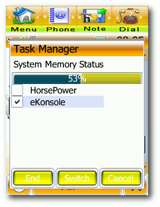
Der Taskmanager.
Remote Login
Schwieriger ist das Einrichten eines Remote Login. Das Ganze soll zunächst mit Telnet versucht werden und, wenn das funktioniert, auch mit SSH. Mit der Original-Firmware ist dies nicht nur ein schwieriges, sondern auch gefährliches Unterfangen. Bei der Anleitung (Link) werden hauptsächlich Manöver ausgeführt, mit denen das Handy den USB-Modus von Modem auf Netz umschaltet. Da die modifizierte Firmware den Modus ,,USB Net'' bereits eingebaut hat, hat man es einfacher. Man installiert inetd auf dem Handy und stellt im Setup den USB-Modus auf ,,USB Net''. Auf dem PC lädt man die folgenden Kernel-Module (sollten sie nicht vorhanden sein, muss man einen neuen Kernel erstellen):
- usbnet
- cdc_ether
- zaurus
Es ist nun eine Netzwerkschnittstelle namens usb0 verfügbar, die man wie folgt konfiguriert: # ifconfig usb0 192.168.1.1 up
Nun muss man auf dem Handy inetd starten (einmal anklicken, es kommt keine Rückmeldung). Danach müsste folgendes funktionieren: $ telnet 192.168.1.2 Trying 192.168.1.2... Connected to 192.168.1.2. Escape character is '^ ]'. MontaVista(R) Linux(R) Consumer Electronics Edition 3.1 Linux/armv5tel 2.4.20_mvlcee31- mainstone_pxa27x (none) login:
Es ist möglich, dass andere Firmware-Versionen andere Adressen verwenden. Wenn an dieser Stelle ein ,,Connection closed by foreign host'' folgt, dann versucht man es einfach noch einmal. Man loggt sich als Root ohne Passwort ein. Zur Sicherheit setzt man sofort ein Passwort, was mit dem Kommando # busybox passwd
erledigt werden kann. Ist man eingeloggt, sollte man mit # ifconfig usbl0 mtu 900
auch auf der Handy-Seite den MTU-Wert setzen. Nach der Pflicht schreitet man zur Kür. Telnet will man eigentlich gar nicht, daher installiert man das SSH-Paket sshd-a1200-v2_2.pkg (oder neuer) und startet es durch einmaliges Antippen. Nun sollte mit $ ssh -l root 192.168.1.2
und dem zuvor festgelegten Passwort ein Login möglich sein. 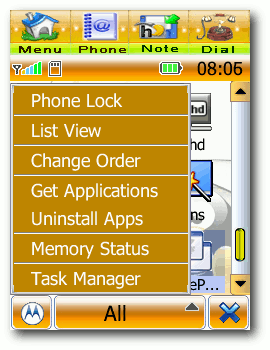
Das Menü im Taskmanager.
Interna
Hat man erst einmal die Shell, dann kann man das System auch ein wenig erkunden. Man sieht beispielsweise, dass der Prozessor aus der ARM-Familie stammt (das war natürlich schon vorher bekannt) und rund 100 Bogomips leistet. Es ist erstaunlich, dass er mit dieser Geschwindigkeit Audio und Video überhaupt abspielen kann, doch vielleicht hat er Koprozessoren für diese Aufgaben. Augenscheinlich stehen der CPU nur 48 MB RAM zur Verfügung. Es könnte also sinnvoll sein, eine Swapdatei anzulegen. Doch zuert schaut man sich die Dateisysteme des A1200 an: # df -T
Man sieht dann, dass nur noch wenige MB interner Flash-Speicher frei sind. Insgesamt dürften höchstens 128 MB zur Verfügung stehen, die genaue Größe erschließt sich aus den ausgegebenen Zahlen nicht so gut. Es dürfte sinnvoll sein, diesen Platz freizuhalten und eine Swapdatei auf der Transflash-Karte, die immer unter /mmc/mmca1 eingebunden wird, anzulegen. In diesem Beispiel nimmt man 4 MB: # dd if=/dev/zero of=/mmc/mmca1/ .system/swapfile bs=1024k count=4 # busybox mkswap /mmc/mmca1/ .system/swapfile
Wie aktiviert man diese Swapdatei? Ein Eintrag in /etc/fstab bringt nichts, da erst der Flash-Speicher eingebunden werden muss. Stöbert man etwas weiter, dann stellt man fest, dass das Linux-System doch in vielen Punkten einem normalen Desktop-Linux ähnelt. So gibt es eine inittab mit Runlevel 2 als Standard und ein SysV-Init-System. Der Systemstart findet in /usr/setup statt. Dieses Verzeichnis ist jedoch nicht änderbar. Allerdings haben die Entwickler der modifizierten Firmware dafür gesorgt, dass die Dateien startup.txt und startup1.txt im Rootverzeichnis der Speicherkarte ausgeführt werden, wenn sie vorhanden sind. 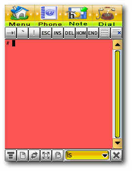
eKonsole.
Also ruft man # vi /mmc/mmca1/startup.txt
auf und trägt folgende Zeilen ein: #!/bin/sh if [ -f /mmc/mmca1/.system/swapfile ]; then swapon /mmc/mmca1/.system/swapfile fi
Und siehe da, Problem gelöst! Wenn man gerade dabei ist, kann man auch noch das Kommando busybox hostname ming
hinzufügen, da der Hostname sonst undefiniert bleibt. Statt ming kann man natürlich einen beliebigen Namen nehmen. Weitere Möglichkeiten
Das Update der Firmware auf eine vernünftige Version ermöglicht auch weitere, vorher kaum machbare Dinge wie die Installation von neuen Skins und Themes. Skins und Themes
Ein Skin ist beim A1200 die ganze Oberfläche mit den Icons und Kontrollelementen. Ein Theme ist dagegen die Animation beim Booten und Ausschalten sowie das Hintergrundbild. Diese beiden können separat geändert werden, was jedoch nicht so trivial ist. Sollte der interne Flash-Speicher während solch einer Änderung volllaufen, steht man gar vor größeren Problemen, da das Gerät dann nicht mehr bootet. Ein ziemlich dummer Designfehler! Wie immer findet man im MotorolaFans-Forum eine gute Anleitung dazu, und zwar im ,,Guide to Modding your A1200'' unter ,,How to Change Skins And Themes'' (Link). Mit dem Skin Installer und Splash Installer (Link) des Entwicklers Eakrin sollten Probleme der Vergangenheit angehören. Bei Mototheme.com (Link) und CCMove (Link) findet man eine Menge Skins. Auch Hintergrundbilder gibt es. Seem Edit
Als Seem Edit wird das Editieren von binären Konfigurationsdateien bezeichnet, von denen es auf Motorola-Handys (möglicherweise auch auf anderen) eine ganze Reihe gibt. Verschiedene Hacker haben zusammengetragen, was die einzelnen Felder in den Dateien bedeuten (soweit bisher bekannt), beispielsweise der Hacker ,,XLR8'' mit seiner Anleitung zum Hex-Editieren ,,Anpassung des Motorola Vxxx'' (Link). Irgendwie erinnert das an die Zeiten des C64 und seiner Vorgänger, als man mit Peek und Poke so einige Funktionen aktivieren oder ändern konnte. Nicht anders ist es hier, denn viele der Einstellungen sind über die GUI nicht verfügbar. So soll es sogar die Möglichkeit geben, EDGE auf den früheren A1200-Modellen zu aktivieren, wobei aber manche Experten vermuten, dass dies aufgrund der nicht dafür ausgelegten Hardware nur mit niedrigeren Datenraten nutzbar ist. Auch zu diesem Thema findet man weiterführende Informationen im MotorolaFans-Forum, z.B. im ,,Guide to Modding your A1200'' unter ,,How to Seem Edit'' (Link). Synchronisation
Die Synchronisation mit einem Linux-Rechner ist einer der Schwachpunkte des A1200, denn das von Motorola gelieferte Programm läuft ja nicht. Es wurde kein Programm gefunden, das unter Linux vollständig funktioniert, obwohl es verschiedene Ansätze gibt und das A1200 mehrere Protokolle versteht. Davon scheint aber keines ausreichend standardisiert zu sein, beispielsweise die AT-Kommandos, wenn man es als Modem einsetzt. Einige Anwender hatten Erfolg mit Webdiensten, die sie anschließend mit Google Mail oder ähnlichem synchronisierten. Andere scheinen über Bluetooth erfolgreich gewesen zu sein. Angeregt durch einen Artikel auf Linux.com (Link) sollen drei Programme getestet werden. Für alle drei muss man den USB-Modus auf ,,Modem'' schalten. KMobileTools (Link) wurde in den Versionen 0.4.3.2 und 0.5.0-beta3 getestet. Man konnte damit den Batteriestand und die Signalstärke sehen sowie SMS lesen. Kontakte konnte das Programm jedoch keine finden, vermutlich weil eine entsprechende Anpassung an das A1200 fehlt. Mit Moto4lin (letzter CVS-Stand) (Link) war leider keine Verbindung zum Handy möglich. Aber wie früher schon erwähnt scheint dieses Projekt lange nicht mehr aktualisiert worden zu sein. Auch in Wammu (Link) in Version 0.25 wird das A1200 offiziell noch nicht unterstützt. Es war zwar eine Verbindung mit dem Verbindungstyp ,,at'' und dem Modell ,,alcatel'' möglich, jedoch wurde nur ein Teil der SMS angezeigt, und die Kontakte hatten falsche Namen. Eine genaue Liste der unterstützten Handys (Link) nennt das A1200 ebenfalls als nicht unterstützt. Sie bezieht sich auf Gammu, das von Wammu im Hintergrund verwendet wird. Auch KMobileTools verwendet Gammu, daher sollten die Resultate ähnlich sein. KMobileTools und Wammu sind wirklich gut, wenn man sie mit einem unterstützten Handy verwendet, und davon gibt es bereits viele. Mit dem A1200 hat man aber momentan Pech. Eine bessere Unterstützung des A1200 sollte möglich sein, sobald die notwendigen Kommandos bekannt sind. 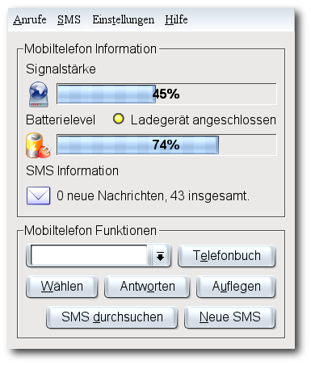
Geräteübersicht in KMobileTools.
Ausblick
Dieser Artikel konnte längst nicht alle Fähigkeiten und Aspekte des Motoming abdecken. Bluetooth, Spracherkennung, Entwicklungsumgebungen und einiges mehr mussten außen vor bleiben. Es tut sich eine Menge rund um das A1200, daher wird dieser Artikel wohl bereits in wenigen Monaten einige wichtige Neuerungen vermissen lassen. Ferner ist es möglich, dass bald neben den auf der Original-Firmware beruhenden Systemen Firmware auf Basis von OpenMoko und Android verfügbar sind. Mittlerweile stehen Programme zur Verfügung, um native Anwendungen für das Motoming zu schreiben, und eine lebendige Gemeinschaft ist dabei, alle nur erdenklichen Anwendungen zu portieren. Das A1200 hat eine glänzende Zukunft, sofern man auf UMTS und WLAN verzichten kann. Das Gerät ist mittlerweile für 200 EUR erhältlich und seinen Preis absolut wert. Es dient als Uhr, Notizblock, mobiler Player, Datenspeicher, Kamera, Taschenlampe, Bildvorführer, Diktiergerät und vieles mehr, und das alles in einem kompakten Gehäuse. Fazit
Es ist schade, dass das Ming bei uns ziemlich unbekannt ist, denn es ist ein tolles Gerät, das nur anfänglich an einigen Restriktionen litt. Mittlerweile können die Probleme dank des Engagements einiger freier Entwickler als gelöst gelten. Möglicherweise setzte auch bei Motorola ein Umdenken ein. Denn es scheint, als wolle Motorola den gesamten Quellcode der EZX-Plattform nun freigeben und das SDK öffnen. Dreh- und Angelpunkt für das A1200 und verwandte Mobiltelefone ist die Webseite MotorolaFans.com (Link) mit ihren Foren und Anleitungen. Die Hardware ist mittlerweile über zwei Jahre alt und das macht sich in mancher Hinsicht schon bemerkbar. Neben dem fehlenden UMTS ist der begrenzte Flash-Speicher wohl das größtes Hindernis. Doch 1 bis 4 GB sind immer noch eine ganze Menge, wenn man sich hier und da etwas einschränkt. Ob auch mehr als 4 GB funktionieren, wird sich zeigen, wenn diese Speicher erhältlich sind. Das A1200 kann allen wärmstens empfohlen werden, die auf UMTS und WLAN verzichten können, mit dem Touchscreen klarkommen und zu einem moderaten Preis ein elegantes Handy mit vielen Funktionen haben möchten. Links
http://www.freiesmagazin.de/freiesMagazin-2008-04
http://www.motorolafans.com/forums/showthread.php?t=8687
http://wiki.openezx.org/Get_a_shell
http://www.motorolafans.com/forums/showthread.php?t=8127
http://www.motorolafans.com/forums/showthread.php?t=10846
http://www.mototheme.com/
http://club.ccmove.com/nclub/topicdisplay-3422-555596-1.html
http://www.xlr8.us/hofo/
http://www.linux.com/feature/122877
http://www.kmobiletools.org/
http://moto4lin.sourceforge.net/
http://wammu.eu/
http://cihar.com/gammu/phonedb/motorola/
http://www.motorolafans.com/forums/
Zum Index
Systemwiederherstellung von Dominik Wagenführ
Viele Benutzer kennen die Windows-Funktion, das System zu einem bestimmten Zeitpunkt wieder herzustellen. Auch unter Linux wäre dies manchmal - vor allem für Testzwecke - wünschenswert. Neben Backup-Lösungen und dem Einsatz von Virtuellen Maschinen gibt es aber auch einige einfache Möglichkeiten, das System wieder herzustellen. Die beiden hier vorgestellten Methoden erfordern ein DEB-basierendes Betriebssystem (siehe ,,Paketverwaltung - von APT und RPM'' in freiesMagazin 03/2008 (Link)) und basieren auf Foren-Beiträgen von ubuntuusers der Benutzer ,,uname'' (Link) und ,,Nori'' (Link). Achtung: Dieser Artikel arbeitet sehr systemnah und sollte nur von Benutzern eingesetzt werden, die sich der damit verbundenen Risiken bewusst sind. Systemwiederherstellung mit dpkg und apt
Mittels des Befehls # dpkg --get-selections "*" > paketliste.txt
kann man sich zu jedem Zeitpunkt eine Liste ausgeben lassen, die den Installationszustand aller Pakete speichert. Die Datei paketliste.txt enthält dabei Einträge der folgenden Art: iceauth install icewm deinstall icewm-common deinstall icewm-gnome-support purge icewm-themes purge
Mittels # dpkg --set-selections < paketliste.txt
kann man den jeweiligen Installationsstand der Pakete wieder einlesen und mittels # apt-get dselect-upgrade
die Änderungen durchführen. Speichert man die Paketliste also direkt nach der Installation des Systems, kann man so zu jedem Zeitpunkt zum Originalzustand zurückkehren. Zusätzlich kann man mit dieser Methode auch ,,kleine'' Backups von Zeit zu Zeit durchführen. Wichtig ist, dass nur der Installationszustand der Pakete, aber keinerlei Konfigurationsdateien oder private Dateien gesichert werden. Systemwiederherstellung mit aptitude
Auch die Paketverwaltung aptitude lässt sich leicht zur Systemwiederherstellung einsetzen. Dabei ist es egal, ob man das Programm in der Vergangenheit nutzte oder ob man es in der Zukunft nutzen möchte. Wichtig ist, dass das verwendete Linux-System Metapakete (Link) benutzt. Man öffnet aptitude per # aptitude
aus der Konsole und führt gegebenenfalls zuerst ein Update durch. Hierzu drückt man bei der (eventuell sichtbaren) Übersicht ,,Aktualisierbare Pakete'' auf die Taste + und bestätigt danach zweimal mit G . Danach bewegt man sich mit den Cursortasten auf den Eintrag ,,Installierte Pakete'' und drückt Shift + M . Dies markiert alle Pakete als ,,automatisch installiert'', sodass oben in der Anzeige der Ausdruck ,,Werde ...MB freigeben'' erscheinen sollte. 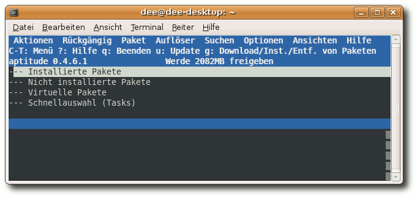
Systemwiederherstellung mit aptitude.
Als nächstes muss man das System über die Metapakete wiederherstellen. Dies soll hier am Beispiel von Ubuntu verdeutlicht werden. Über die eingebaute Suche mittels Shift + 7 bzw. / sucht man die zum System zugehörigen Metapakete und installiert diese mit einem Druck auf + :
- ubuntu-desktop - der gesamte Ubuntu-Desktop
- ubuntu-minimal - das minimale Ubuntu-System
- ubuntu-standard - die Standard-Ubuntu-Pakete
- linux-generic oder linux-386 oder linux-686 - der aktuelle Kernel
- language-pack-en und language-pack-de
- language-support-en und language-support-de (optional)
- language-pack-gnome-en und language-pack-gnome-de oder language-pack-kde-en und language-pack-kde-de (je nach Desktopumgebung)
http://www.freiesmagazin.de/freiesMagazin-2008-03
http://forum.ubuntuusers.de/post/1260823/
http://forum.ubuntuusers.de/topic/30400/
http://wiki.ubuntuusers.de/Metapakete
http://debiananwenderhandbuch.de/deborphan.html
http://debiananwenderhandbuch.de/debfoster.html
Zum Index
Tipps und Tricks für den Alltag mit Linux von Christoph Langner
In stetiger Folge möchte ich hier versuchen, ein paar Tipps und Tricks weiterzugeben, die das Benutzen von Linux etwas angenehmer machen. Denn manch äußerst praktische Funktion ist zwar nicht direkt offensichtlich, doch wenn man sie einmal kennt, äußerst intuitiv. Alten Linuxhunden erzähle ich vermutlich olle Kamellen, doch Einsteiger und Umsteiger sollten hier Monat für Monat einen Blick reinwerfen. Folge 1: Verschieben/Verkleinern bzw. Vergrößern von Fenstern
Als Grobmotoriker macht das Verschieben bzw. das Verkleinern/Vergrößern von Fenstern keinen Spaß. Zum Verschieben muss mit der Maus die schmale Titelleiste eines Fenster angepackt werden und beim Verkleinern/Vergrößern der dünne Fensterrand bzw. der kleine ,,Griff'' an der rechten unteren Ecke eines jeden Fensters. Diese Elemente sind nicht gerade groß, sodass man im Eifer des Gefechts gerne daneben trifft. Doch die Desktopumgebungen von Linux bieten hier eine sehr praktische Alternative, die jedoch selten dokumentiert wird. GNOME
Klickt man bei gedrückter Alt-Taste auf eine beliebige Stelle eines Fensters, so kann man dieses verschieben, ohne die Titelleiste anfassen zu müssen. Klickt man wiederum mit gedrückter Alt-Taste und diesmal jedoch mit der mittleren Maustaste bzw. der Daumentaste in die Nähe einer Ecke, so verändert man die Größe des Fensters. Man muss also nicht mehr genau zielen, um Fenster verschieben oder in ihrer Größe verändern zu können. In den Einstellungen von GNOME unter ,,System » Einstellungen » Fenster'' kann man dazu noch ein paar Konfigurationen vornehmen. So kann man hier bestimmen, mit welcher Taste diese Aktion ausgeführt wird. 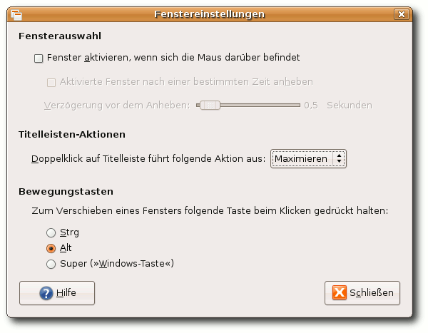
Der Einstellungsdialog unter GNOME.
KDE
Auch mit KDE als Desktopumgebung funktioniert dies. Die Alt-Taste plus linke Maustaste verschiebt das Fenster wieder. Alt plus mittlere Maustaste schiebt das aktive Fenster in den Hintergrund und Alt plus rechte Maustaste lässt einen die Größe des Fensters ändern. KDE-typisch lässt sich das Verhalten bis ins kleinste Detail einstellen. Man findet die passenden Einstellungen unter ,,Systemeinstellungen » Fensterverhalten » Fenstereigenschaften » Fenster » Inneres Fenster, Titelleiste und Rahmen''. Dort lässt sich dann nicht nur die Sondertaste bestimmen, sondern was bei welcher Maustaste passieren soll. 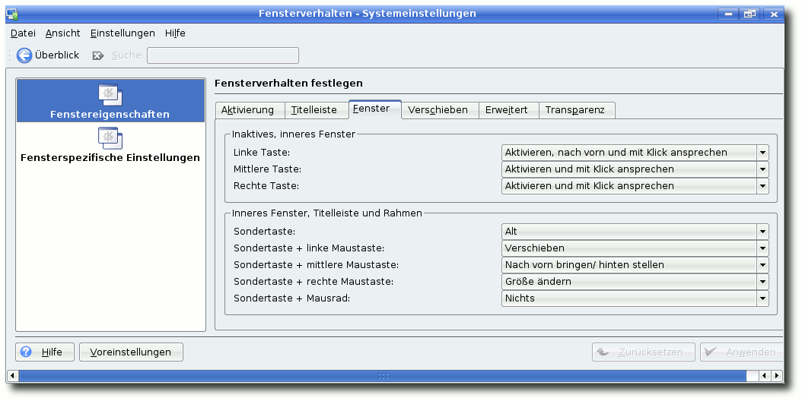
Der Fenster-Konfigurationsdialog von KDE.
Microsoft Windows
Wer viel mit Linux arbeitet und diese Funktion liebgewonnen hat, der vermisst diese Funktionalität früher oder später unter Windows und man erwischt sich des Öfteren dabei, dass man versucht, Fenster mit Alt-Taste plus linker Maustaste zu verschieben. Wer auch unter Windows Fenster auf diese komfortable Art und Weise manipulieren will, der sollte einen Blick auf WinMover (Link) werfen. Diese Freeware kommt der Funktionalität von Linux recht nahe. 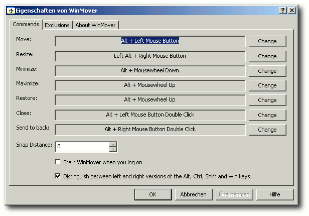
Gewohntes Fensterverschieben - mit WinMover auch unter Windows machbar.
Links
http://lifehacker.com/338559/manipulate-windows-quick+like-with-winmover
Zum Index
LinCity-NG von Martin Hähnel
Wer kennt sie nicht? Wer hat sie noch nie gespielt? Die Städtebausimulation SimCity hat Generationen von Computerspielern stundenlang Freude beschert. Auch Linuxspieler haben dank LinCity-NG die Möglichkeit, diesen Klassiker neu zu erleben. Installation
Für das Spiel stellt das Entwicklerteam neben dem Quellcode auch ein distributionsunabhängiges Installationsprogramm für das Autopackage-System zur Verfügung. Darüber hinaus gibt es Pakete für fast alle großen Distributionen, die aber nicht offiziell von den Entwicklern erstellt wurden. Auf der Downloadseite (Link) des Projektes wird explizit darauf hingewiesen, dass diese Pakete veraltet sein könnten. Unter Umständen fehlen daher einige neuere Funktionen und sie könnten Programmfehler enthalten, die in der neusten Version von LinCity-NG bereits ausgebessert wurden. Hier wird die Installation anhand des offiziellen Installationsprogramms beschrieben. Als erstes wird die Installationsdatei (Link) von der Projektseite heruntergeladen und über folgendes Kommando gestartet (Man befindet sich im Verzeichnis, in dem sich die heruntergeladene Datei befindet.): $ bash lincity-ng-1.1.2.x86.package
Als nächstes wird man gebeten, dem Programm den Download von weiteren benötigten Dateien aus dem Internet zu gestatten. An dieser Stelle sei angemerkt, dass hier noch nicht LinCity-NG auf dem Rechner installiert wird, sondern das Hilfsprogramm Autopackage (Link). Ist der Download abgeschlossen, startet das eigentliche Installationsprogramm und fragt nach dem ,,System-Passwort'', also je nach Distribution nach dem root-Kennwort, oder wie zum Beispiel unter Ubuntu üblich, nach dem Kennwort des Benutzerkontos. Wenn man das Autopackage-Programm nur für sein Benutzerkonto benötigt, kann man hier getrost auf ,,Kein Passwort'' klicken. 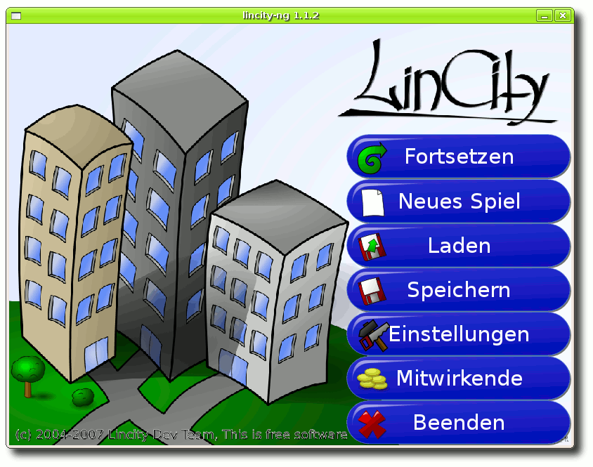
Der Startbildschirm von LinCity-NG.
Nachdem Autopackage vollständig installiert wurde, startet automatisch die Installation von LinCity-NG. Es wird überprüft, ob das System alle Abhängigkeiten erfüllt und bei Bedarf werden fehlende Pakete automatisch aus dem Internet nachinstalliert. Nach der abgeschlossenen Installation erscheint LinCity-NG im Anwendungsmenü unter ,,Spiele''. Das Hilfsprogramm Autopackage und LinCity-NG sowie alle weiteren Autopackage-Pakete lassen sich sehr einfach durch das Programm ,,Manage 3rd Party Software'', welches man unter ,,Systemwerkzeuge'' (GNOME) beziehungsweise ,,System'' (KDE) findet, entfernen. Das Spiel
In LinCity-NG übernimmt man das Amt eines Stadtplaners. Man baut Gebäude, kümmert sich um den Strom, um Naturschutz und Bildung. Veteranen des Klassikers SimCity werden erstaunt sein, denn in LinCity-NG funktionieren viele Dinge ganz anders, als man es zunächst erwartet. Fade Menükost
Ist das Spiel einmal gestartet, bietet sich dem Spieler ein im Comicstil gehaltenes, deutschsprachiges Menü. Hier lassen sich Spielstände laden und speichern und einige Einstellungen vornehmen. Leider sind die Möglichkeiten, hier etwas einzustellen, begrenzt. Optionen, wie etwa die Auflösung des Spiels zu verändern oder eigene Musikstücke als Hintergrundbeschallung auszuwählen, sind über das Einstellungsmenü nicht möglich. Es muss oft umständlich von Hand an der Konfigurationsdatei von LinCity-NG herumgeschraubt werden oder - wie im Falle der Musik - manuell etwas in ein dafür vorgesehenes Verzeichnis kopiert werden. Ein guter Anlaufpunkt für Hilfe ist das offizielle Wiki (Link) (insbesondere die FAQ (Link)) des Projektes und der IRC-Channel #lincity auf dem Netzwerk irc.freenode.net, in dem sich auch deutschsprachige Entwickler tummeln. Mit einem Klick auf ,,Neues Spiel'' hat man die Wahl zwischen einem Sandkastenmodus, wahlweise mit einem kleinen funktionierenden Dorf oder ohne, oder man wählt eines der drei mitgelieferten Szenarien aus. 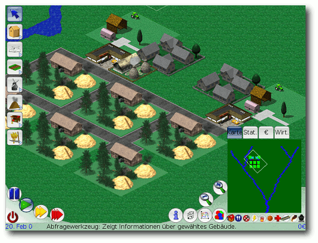
Screenshot aus LinCity-NG: Vom Dorf ...
Aller Anfang ist schwer
Man startet sein Spiel in einer grünen, jungfräulichen Landschaft mit lediglich ein paar kleinen Hütten, einem Marktplatz und einer Köhlerei. Die Oberfläche von LinCity-NG erinnert dabei stark an das Menü von SimCity 3000, und man findet sich trotz der vielen Buttons und Informationsfenster relativ schnell zurecht. Im oberen linken Bereich befinden sich die Gebäude, Straßen und weitere Dinge, wie etwa Stromleitungen. Ein Rechtsklick auf eines der Symbole gibt in einem Hilfefenster Aufschluss über die Objekte. 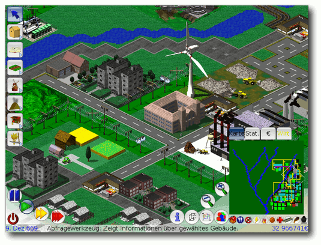
... über die Stadt ...
Man sollte in Ruhe planen, bevor man seine Stadt aufbaut. Dafür lässt sich über die Buttons im unteren linken Bereich die Geschwindigkeit des Spiels in drei Stufen skalieren und per Pausefunktion hält man das Spiel sogar komplett an. Ein Mausklick auf die gebauten Gebäude lohnt sich, um, untermalt mit einem zum Gebäude passenden Geräusch, wichtige Informationen wie den Stromanschluss und die Verfügbarkeit einer Feuerwehr zu kontrollieren. Eine wichtige Hilfe, um die Bedürfnisse der Menschen und den Zustand der Stadt zu analysieren, bietet das in der unteren rechten Ecke positionierte Karten- und Statistiken-Menü. Hier hat man die Möglichkeit - ganz wie in SimCity - zum Beispiel das Verkehrsaufkommen für die Straßen zu überprüfen oder das Vorkommen von Kohleflözen sichtbar zu machen. Die Statistiken zeigen einem, dass schon bald die ersten neuen Bewohner in die Stadt kommen. Die ersten Probleme beginnen: Den Bewohnern fehlt Arbeit. Leider fehlt LinCity-NG ein richtiges Tutorial, welches dem Anfänger den Einstieg ins Spiel vereinfacht. Ein Blick in die umfangreiche Hilfe, die man über den i-Button im Statistiken-Menü findet, verrät aber, dass man eine Töpferei benötigt, um für den Anfang Arbeitsplätze bereitzustellen. 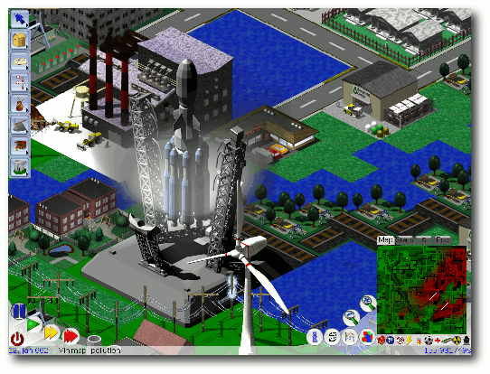
... zur Raketenbasis.
Man baut also solch ein Gebäude und kann so die Abwanderung der Neusiedler abwenden. Die Städter haben Hunger und so baut man ein paar Bauernhöfe, um die hungrigen Münder zu stopfen. Die meisten Probleme löst man nach dem immer gleichen Schema: Statistiken analysieren und eine Änderung über die verschiedenen Bauoptionen herbeiführen. Bildungslücke?!
Das Spiel hat eine weitere wichtige Komponente: Das so genannte Technologie-Niveau. Dieses wird durch die Errichtung von sogenannten Monumenten, später Schulen und schließlich Universitäten gefördert. Mit der Zeit wächst so das technologische Niveau, was es einem ermöglicht, neue Gebäude zu errichten, Strom zu erzeugen oder auch Eisenbahnstrecken zu bauen. Der Fortschritt ermöglicht es einem auch, neue Rohstoffe zu verwenden und somit neue und bessere beziehungsweise wertvollere Waren zu erzeugen, die wiederum wichtig für neue Gebäude und deren Wirtschaftskreisläufe sind. 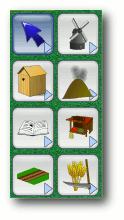
Gebäudeauswahl.
Grafisch wird das Spielgeschehen in einer isometrischen 3-D-Ansicht dargestellt. Die Grafikengine gewinnt sicherlich keinen Schönheitswettbewerb, ist aber zweckmäßig und übersichtlich. Die einzelnen Gebäude werden dabei jedoch nur rudimentär animiert. Leider gibt es bei den Gebäudemodellen wenig Abwechslung. So sieht beispielsweise ein Bauernhof immer gleich aus, was dazu führt, dass die Städte fade und nicht so abwechslungsreich wie im großen Vorbild SimCity 3000 wirken. Alles sehen, alles steuern
Dreh- und Angelpunkt der Stadtplanung sind neben den schon genannten Statistiken die Marktplätze. Sie verfügen über einen gewissen Einzugsbereich, innerhalb dessen sie umstehende Gebäude versorgen, und sie bieten außer Waren und Rohstoffen auch Arbeitsplätze für die wachsende Bevölkerung an. Neben den wirtschaftlichen Belangen, sollte man auch immer einen Blick auf die Luftverschmutzung haben, da die Bewohner eines Städtchens ganz empfindlich auf Umweltverschmutzung reagieren. Auch für die Müllentsorgung will gesorgt werden und ehe man sich versieht, hat man - ohne es zu merken - Stunden vor dem Computer verbracht. 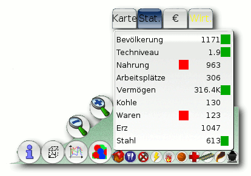
Das Statistikfenster mit Menü.
LinCity-NG ist etwas für Tüftler und Perfektionisten. Für Simulationsfans ist es ein Spiel mit enormem Langzeitspielspaß, während sich Freunde des actionlastigen Spiels nicht nur auf Grund des fehlenden Eyecandys und der fehlenden zwischenzeitlichen Motivationen, wie etwa durch die Berater in SimCity, relativ schnell langweilen werden. Der Soundtrack, der das Geschehen untermalt, ist dabei leider eher mau, erinnert aber an die Hintergrundmusiken von SimCity. Das Spiel endet entweder mit der Etablierung einer nachhaltigen Wirtschaft oder dem Bau einer Raketenbasis, um die Stadtbevölkerung auf einen neuen, unbekannten Planeten zu führen. Fazit
Das Spiel gefällt. Es weckt den Perfektionisten in einem, jedes noch so kleine Detail noch ein kleines bisschen zu verbessern. Wer sich an den etwas lieblos gestalteten Gebäuden und der drögen Soundausgabe nicht stört, findet hohen Dauerspielspaß für Tüftler und Simulationsfans. Links
http://lincity-ng.berlios.de/wiki/index.php/Download/Installation
http://prdownload.berlios.de/lincity-ng/lincity-ng-1.1.1.x86.package
http://www.autopackage.org/
http://lincity-ng.berlios.de/wiki/index.php/Main_Page
http://lincity-ng.berlios.de/wiki/index.php/FAQ
Zum Index
andLinux - Das Schaf im Wolfspelz von Dominik Wagenführ
Wie oft vermisst man als Linux-Anwender unter Windows die gewohnten Programme seiner Linux-Distribution? Einige Anwendungen wie Firefox, OpenOffice.org oder Pidgin gibt es auch nativ für Windows, aber auf andere wie Konqueror oder Nautilus kann man nur über ein in einer Virtuellen Maschine installiertes Linux-System zugreifen. Hier geht andLinux einen anderen Weg, indem es Linux-Programme unter Windows fast nativ zur Verfügung stellt. Einleitung
andLinux (Link) ist ein Zusammenspiel von verschiedenen Programmen, die Linux-Funktionalitäten unter Windows-Systemen bereitstellen sollen. Die Basis bildet Cooperative Linux (kurz CoLinux) (Link), welches den Linux-Kernel für Windows portiert hat und so die Linux-Programme nativ laufen lassen kann. Für die grafische Anzeige wird Xming (Link) benutzt, das den X Window Server unter Windows zur Verfügung stellt. Zu guter Letzt sorgt PulseAudio (Link) für eine Soundausgabe. Diese drei Programme wurden zusammen mit einem Ubuntu Linux 7.10 als KDE- und Xfce-Version zu der Anwendung zusammengeschnürt, die man als andLinux kennt. Installation
Die Installation ist ziemlich simpel. Von der andLinux-Downloadseite (Link) kann man sich die aktuelle andLinux Beta 1 rc6 als Minimalversion mit Xfce-Oberfläche (143 MB) oder als Vollversion mit KDE-Oberfläche (665 MB) herunterladen. Beides sind ausführbare exe-Dateien, die man nach dem Download unter Windows 2000, Windows XP, Windows 2003 oder Windows Vista (alles nur für 32-bit-Systeme) einfach durch einen Doppelklick installieren kann. 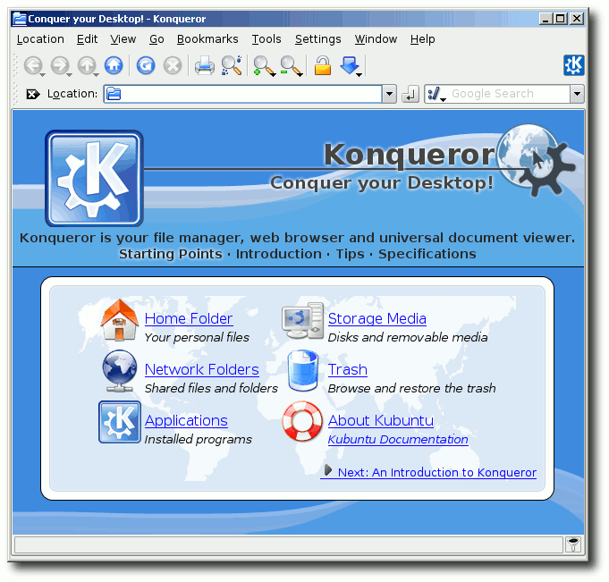
Konqueror unter Windows 2000.
Die Installation beider Versionen läuft ziemlich ähnlich ab. Zuerst bestimmt man, wie viel Speicher man andLinux zur Verfügung stellen will. 512 MB sollten hierbei meistens ausreichend sein. Die Frage im nächsten Fenster, ob der Sound aktiviert werden soll, kann man mit ,,yes'' beantworten. 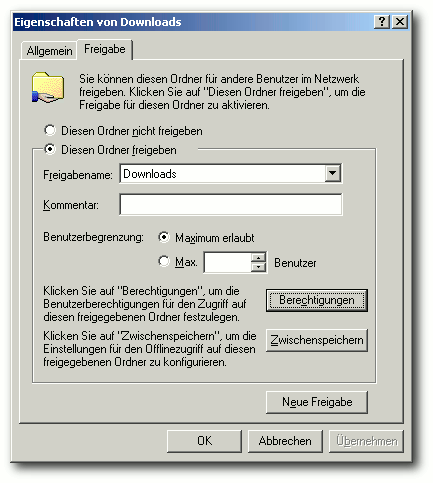
Samba-Freigabe unter Windows 2000.
Etwas komplizierter ist der Zugriff auf die Dateien des Windows-Systems. Die Kommunikation zwischen andLinux und Windows findet über eine Netzwerkverbindung statt. Aus diesem Grund muss man wie unter einem herkömmlichen Linux-System eine Samba-Freigabe erzeugen, auf die andLinux dann zugreifen kann. Hierfür klickt man im Windows Explorer mit der rechten Taste auf den jeweiligen Ordner und wählt ,,Freigabe''. Dort wählt man den Reiter ,,Freigabe'' an und erstellt einen eindeutigen Bezeichner (,,Freigabename'') ohne Sonder- oder Leerzeichen zur Identifikation. Gegebenenfalls kann man auch noch spezielle Zugriffsrechte setzen. In andLinux wählt man während der Installation bei ,,Windows File Access'' den Eintrag ,,using Samba'' aus. Im nächsten Fenster gibt man dann den eindeutigen Bezeichner an sowie den Namen und das Passwort des Benutzers, der darauf zugreifen darf. (Im Regelfall sind dies die Daten des angemeldeten Windows-Benutzers.) Hinweis: Eine Alternative für den Dateizugriff stellt das coLinux File System (CoFS) dar, das aber mit Sonderzeichen, insbesondere deutschen Umlauten, nicht umgehen kann. Nach der Auswahl von ,,COFS'' muss man nur den jeweiligen Order/das jeweilige Laufwerk angeben, den/das man einbinden möchte. Eine separate Windows-Freigabe ist nicht erforderlich. 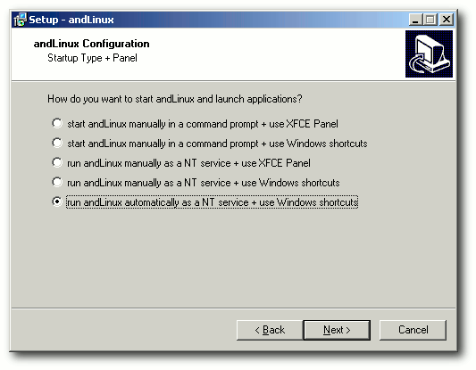
Startmöglichkeiten bei der Xfce-Version.
Danach kann man angeben, welche Verknüpfungen auf dem Windows-Desktop oder in der Schnellstartleiste erscheinen sollen. Man kann hierüber auch direkt Verknüpfungen zu verschiedenen Linux-Programmen erzeugen. Zusätzlich ist es möglich, das Windows-Explorer-Kontextmenü um Einträge zu erweitern, so dass Dateien direkt in Konsole/Xfce-Terminal, in Konqueror/Nautilus oder in Kate/Mousepad geöffnet werden. Zuletzt kann man bei der KDE-Version noch die Dateitypenzuordnung für den Windows Explorer ändern. Im letzten Schritt vor der Installation gibt man an, wie andLinux gestartet werden soll. Hierbei kann man zwischen einem manuellen Start per Menü-Eintrag oder mittels Windows-Dienst und dem Autostart mittels Windows-Dienst auswählen. Bei der Xfce-Version hat man noch zusätzlich das Xfce-Panel zum Start der Programme zur Auswahl. Es wird empfohlen, auf den Windows-Dienst zu verzichten und andLinux manuell zu starten (siehe unten unter ,,Probleme''). Danach beginnt die Installation. Mittendrin wird gefragt, ob das Gerät ,,TAP-Win32 Adapter V8 (coLinux)'' installiert werden soll. Dies sollte man natürlich erlauben, da es für die Kommunikation zwischen andLinux und Windows zuständig ist. Es kann bei der Installation zu einer Fehlermeldung ,,Unable to execute file: sc'' kommen. Dies kann man ignorieren. Ein Windows-Neustart am Ende der andLinux-Installation ist aber unumgänglich. Benutzung
Je nach Autostart-Wahl läuft andLinux bereits. Für einen manuellen Start findet man unter ,,Programme » andLinux » Start andLinux'' einen zugehörigen Menüeintrag, der gegebenenfalls auch auf dem Desktop zu finden ist. 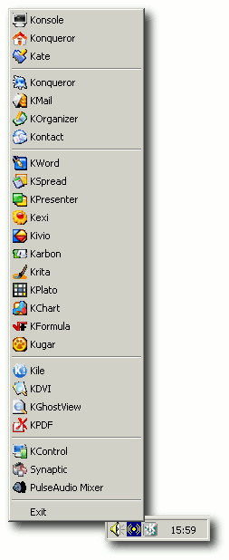
KDE-Menü im Windows-Systray.
KDE-Version
Nach dem Start hat man in der KDE-Version im Systray das normale KDE-Symbol, welches auf einen einfachen Klick die Liste der eingetragenen Programme öffnet. Unter anderem sind Konsole, Konqueror, Kate, Kontact, KOffice, Kile und viele mehr vorinstalliert. Als Paketverwaltung kommt im Gegensatz zu Kubuntu nicht Adept, sondern das von Ubuntu bekannte Synaptic zum Einsatz. Hierüber kann man ganz normal Pakete installieren und deinstallieren. Neue Programme werden aber nicht in das K-Menü mit aufgenommen. 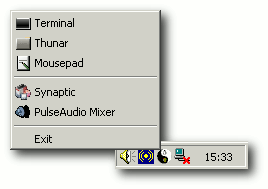
Xfce-Menü im Windows-Systray.
Xfce-Version
In der Xfce-Version kann man während der Installation auswählen, ob die Programme per Xfce-Menü oder Xfce-Panel gestartet werden sollen. Das Panel lässt sich dabei im Gegensatz zum Menü über einen Rechtsklick leicht anpassen und erweitern. Vorinstalliert sind nur der Dateimanager Thunar, ein GNOME-Terminal, der Browser Firefox, Mousepad als Texteditor und Synaptic. 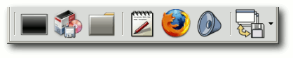
Xfce-Panel unter Windows.
Probleme
Häufigstes Problem ist, dass eine Firewall den Zugriff auf die Netzwerkkomponente sperrt und so kein Linux-Programm starten kann. Man sollte also darauf achten, dass der Zugriff auch erlaubt ist. Als zweites Problem muss der andLinux-Dienst genannt werden, der sehr häufig nicht automatisch startet oder nicht richtig läuft. Die zu startenden Programme können sich dann nicht mit dem Server verbinden: ,,Could not launch 'PROGRAM': could not connect to 192.168.11.150:81.'' In so einem Fall hilft es, den Dienst ,,andLinux'' unter ,,Systemsteuerung » Verwaltung » Dienste'' neu zu starten. Es wird aber sowieso empfohlen auf den Dienst zu verzichten und den manuellen Start zu bevorzugen. Daneben kann es auch zu Probleme kommen, wenn der IP-Bereich 192.168.11.0-192.168.11.255 bereits für ein privates Netzwerk benutzt wird. In diesem Fall sollte man die IP des Netzes anpassen. Problematisch war noch die deutsche Tastatur. Leider wurde diese nicht erkannt und konnte im Test auch nicht zur Arbeit bewegt werden. Es musste also mit einem englischen Tastaturprofil gearbeitet werden, was für den ein oder anderen ungewohnt sein mag. Fazit
Auch wenn es noch ein paar Schwierigkeiten gibt, ist andLinux ein sehr sinnvolles Programm, um Linux-Anwendungen schnell und nativ unter Windows ausführen zu können. Der Start einer Virtuellen Maschine dauert im Vergleich um einiges länger. In Zukunft ist sicher mit einer stabilen Version zu rechnen. Links
http://andlinux.org/
http://www.colinux.org/
http://www.straightrunning.com/XmingNotes/
http://www.pulseaudio.org/
http://andlinux.org/downloads.php
Zum Index
Meine Welt mit Fluxbox von Adrian Böhmichen und Thorsten Schmidt
Jenseits der beiden großen Arbeitsumgebungen GNOME und KDE liegt der Fenstermanager Fluxbox. Fluxbox ist eine sehr linuxtypische Anwendung: klein, smart und hoch konfigurierbar entsprechend persönlicher Vorlieben. Welche interessanten Features Fluxbox mitbringt, soll der Artikel schlaglichtartig zeigen. Da Fluxbox nach gut sechs Jahren Entwicklungszeit mittlerweile in Version 1.0.0 vorliegt, ist es einerseits sehr stabil und andererseits in den Repositories vieler Distributionen vorhanden. Die Installation läuft wie gewöhnlich über das jeweilige Paketmanagement (Paket fluxbox). Nach der Installation und dem ersten Login begrüßt einen Fluxbox mit dem neuen Standardthema ,,bloe''. Keiner sollte überrascht sein, wenn jetzt noch nichts Spektakuläres zu sehen ist: Es gibt nur den Hintergrund, eine Toolbar und möglicherweise ein Menü, das vielleicht noch nicht mal den eigenen Vorstellungen entspricht. Aber Fluxbox ist im Wesentlichen das, was man daraus macht. An die Arbeit! Menü einrichten
In wenigen Distributionen ist noch kein Menü vorhanden. Das äußert sich dadurch, dass bei einem Druck auf die rechte Maustaste nichts passiert. Die einzige Möglichkeit, Fluxbox dann zu beenden, ist das gewaltsame Beenden des X-Servers durch Strg + Alt + Backspace . Bei Ubuntu ist dies z. B. der Fall. Das Menü lässt sich aber leicht in der Konsole über den folgenden Befehl aufrufen: $ fluxbox-generate_menu
Unter den debianartigen Systemen wird das Menü über die folgenden Befehle erstellt: $ update-menus $ mv ~/.fluxbox/fluxbox-menu ~/.fluxbox/menu
Zuerst wird das Programm menu genutzt und danach die erstellte Menüdatei noch richtig benannt. Jetzt hat man auf jeden Fall eine gute Vorlage in ~/.fluxbox/menu, um sich ein Menü nach seinen Vorstellungen zu erstellen. Die Syntax besteht nur aus vier Elementen und ist schnell zu erlernen. Öffnet man die ~/.fluxbox/menu mit einem Editor, dann sieht das in etwa so aus: [begin] (Fluxbox) <> (Swiftfox) swiftfox <> (Terminals) <> (aterm) aterm <> (urxvt) urxvt <> [end]
Eines vorweg: Alle Veränderungen dieser Datei wirken sich nahezu ausschließlich auf die grafische Anordnung der Elemente und der jeweils auszuführenden Aktionen aus und sind sofort sichtbar. Die Elemente in eckigen Klammern beschreiben die Struktur des Menüs. Die Elemente in runden Klammern beeinflussen den angezeigten Text, die Elemente in geschweiften Klammern die auf Mausklick hin ausgeführten Aktionen. Hier kann sich jeder sein Wunschmenü erstellen. Aber Vorsicht: Immer eine Sicherungsdatei der ~/.fluxbox/menu anlegen! Eine ausführliche Anleitung zum Thema findet man in der Fluxbox Dokumentation (Link) oder auf der Wiki-Seite von ubuntuusers.de (Link). Wer jetzt stirnrunzelnd nach der Funktion der spitzen Klammer fragt, liest bitte weiter. Icons im Menu
Um sein Menü durch Icons aufzupeppen, geht man wie folgt vor: Als Erstes besorgt man sich die Icons. Dazu lädt man sich die passenden Icon-Themen beispielsweise von KDE-Look.org (Link) oder GNOME-Look.org (Link) herunter, entpackt die Archive und verschiebt nun die benötigten Bilddateien z. B. nach ~/.fluxbox/icons. Sollte man schon verschiedene Anwendungen installiert haben, lohnt sich auch immer ein Blick in /usr/share/pixmaps oder /usr/share/icons, wo man viele Icons findet. Abschließend editiert man die Einträge in spitzen Klammern in der ~/.fluxbox/menu. Hier sollte der Pfad zum jeweiligen Icon stehen: [exec] (Swiftfox) swiftfox </home/BENUTZERNAME/.fluxbox/icons/ swiftfox.xpm>
Danach stehen einem die Icons zur Verfügung. 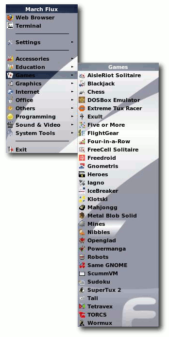
Menübeispiel.
Übersichtliche Arbeit mit Workspaces
Das Feature der Workspaces (Arbeitsflächen) bringt den Nutzer in die Lage, seine Arbeit mit verschiedenen Programmen auf mehrere Arbeitsflächen zu verteilen. Als Standard sind vier Arbeitsflächen eingestellt; sie sind über die Tasten Alt + F1 bis F4 oder aber über die Pfeilicons ( < und > ) auf der Toolbar erreichbar. Um dabei nicht den Überblick zu verlieren, bringt Fluxbox ein weiteres Feature mit: das Workspace-Menü. Ein einfacher Klick mit der dritten Maustaste (in der Regel das Mausrad) auf den Desktop reicht, um wieder den Überblick auf alle Arbeitsflächen samt den auf ihnen laufenden Anwendungen zu gewinnen. Aber weit mehr ist hier möglich: Sollte es mal auf den vier Workspaces zu eng werden, kann man über das Workspace-Menü ,,on the fly'' neue Arbeitsflächen hinzufügen - und natürlich auch entfernen. 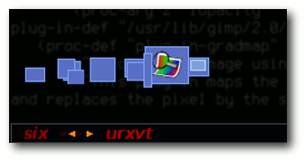
Der ipager.
Wer seine Arbeitsflächen lieber permanent und ohne Extraklick im Blick haben möchte, sollte einen Pager benutzen: fbpager (Link), fluxter (Link) oder ipager (Link), um nur einige zu nennen. Diese Pager sind wiederum so stark konfigurierbar, dass sie genug Stoff für einen eigenen Artikel liefern würden. Slit - just another Toolbar
,,Slit'' ist nur ein anderes Wort für Toolbar. Warum sollte man die Slit benutzen wollen, wenn man schon eine Toolbar hat? In der Slit können Programme im withdrawn-Modus (dt. ,,zurückgezogen'') gestartet werden. Das heißt, dass es Programme gibt, welche verborgen in der Toolbar starten. Das funktioniert leider nicht mit jeder Anwendung. Bekannte Programme mit Slit-Modus sind die Dockapps (Link) vom Fenstermanager ,,Windowmaker'' oder der Systemmonitor gkrellm (Link). Letzterer kann über den Befehl $ gkrellm -w
im Slit gestartet werden. Weitere Programme, welche auch die Slit erst nach dem Parameter -w nutzen, sind die Pager fbpager und fluxter. Mehr zu dem Thema Slit gibt es in der offiziellen Dokumentation (Link). Ordnungsliebe mit Tabs
Ein anders wichtiges Feature kommt mit der Funktion der Tabs. Ihr Prinzip ist bekannt und schnell erklärt: Durch Tabs lassen sich mehrere Fenster einer Anwendung oder aber Fenster verschiedener Anwendungen in einem Fenster abbilden. Der Vorteil: Alle Fenster gruppieren sich in einem Fenster mit den gleichen Ausmaßen und den gleichen x/y-Koordinaten. Empfehlenswert für alle Internet-Explorer-Traumatisierten, aber das nur am Rande. Tabs lassen sich nun über zwei Wege erstellen. Die entspannte Variante ,,sloppy Windowgrouping'' ist mittlerweile mit dem Eintrag ,,session.tabsAttachArea: Window'' in der ~/.fluxbox/apps aktiviert. So lässt sich jedes Fenster mit der dritten Maustaste an eine beliebige Stelle auf ein Zielfenster ziehen und schon gruppieren sich die Fenster zu einem einzigen. 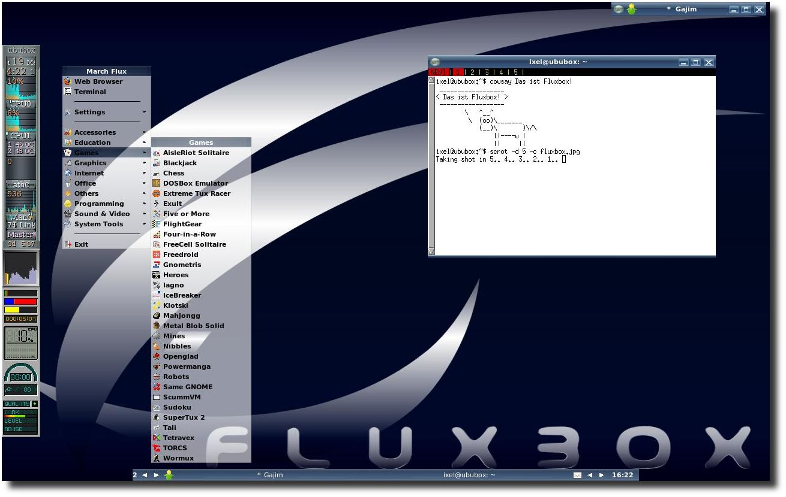
Fluxbox von seiner aufgepeppten Seite.
Vielleicht erwartet man aber mehr von der Tab-Funktionalität, vielleicht möchte man nur bestimmte Anwendungen gruppieren und das auch nur auf einer bestimmten Arbeitsfläche (,,Autogrouping''). Kein Problem. Hierzu bearbeitet man die Datei ~/.fluxbox/apps. Mit dem ,,group''- und dem ,,end''-Element werden die zu gruppierenden Anwendungen umschlossen. Die weiteren Einträge beschreiben, welche Anwendungen (,,app'') auf welcher Arbeitsfläche (,,Workspace'') mit welcher Fenstergröße (,,Dimensions'') und an welcher Stelle (,,Position'') erscheinen sollen. Mehr zu den einzelnen Elementen und deren Attributen erfährt man wieder in der Dokumentation (Link). Als nächstes wird OpenOffice.org gebändigt: [group] (name=VCLSalFrame) (class= OpenOffice.org 2.3) 2 1022 744 (WINCENTER) 9 -3 [end]
Alle OpenOffice.org-Dokumente erscheinen nun in einem Fenster. Wichtig: Bei der näheren Beschreibung des Elements [app] durch (name=) und (class=) sollte man sich nicht auf seine Intuition verlassen, da die Bezeichnungen intern abweichen, wie am Beispiel zu sehen ist. Folgende Vorgehensweise empfiehlt sich: Als Erstes öffnet man die in Frage kommende Anwendung, dann setzt man folgenden Befehl in einem Terminal ab: $ xprop WM_CLASS - cut -d \= -f 2
Daraufhin bewegt man den Cursor auf das Fenster der Anwendung und klickt darauf. Dann erscheint im Terminal die gewünschte Ausgabe für name und class: "VCLSalFrame", "OpenOffice.org"
Fluxbox per Tastatur steuern
Fluxbox bringt hier von Haus aus sehr weitreichende Optionen mit. Alle Einstellung dazu liegen in der Datei ~/.fluxbox/keys. An dieser Stelle soll nur kurz skizziert werden, was möglich ist. Nicht vergessen: Weit mehr ist möglich. Einen Überblick liefert das Fluxbox-Wiki (Link). Der allgemeine Aufbau der Elemente in der ~/.fluxbox/keys sieht folgendermaßen aus: <modifier> <key> :<command> <operation>
Das <modifier>-Element erwartet immer eine Steuertaste der Tastatur, also Strg , Alt , etc. (Achtung: Sie werden fluxboxintern anders benannt (Link).) Das <key>-Element verlangt bei Tastenkombinationen die zusätzlichen Tasten. Mit dem <command>-Element werden die fluxboxeigenen Aktionen beschrieben (siehe unten). Über das <operation>-Element wird das <command>-Element spezifiziert. Alle Elemente werden durch ein Leerzeichen getrennt. Konkret sieht eine Zeile dann folgendermaßen aus: Mod1 2 :Workspace 2
Durch die letzte Zeile wechselt man also mit Alt + 2 von der aktuellen Arbeitsfläche auf die Arbeitsfläche 2. Es gibt in der Version 1.0.0 zirka 65 Fluxboxeigene <command>-Elemente (Link), sodass sich ein näherer Blick allemal lohnt - dabei sind einige Befehle, die einem die Arbeit erleichtern, und andere, die einfach nur Spaß machen. Natürliche Speicherressourcen schonen
Das bis hierhin Gezeigte ist wie gesagt nur ein minimaler Ausschnitt der Möglichkeiten. Unschwer zu erkennen, dass man - je nach dem, wie extensiv man die Tastatursteuerung benutzt - ziemlich schnell auf eine hohe Anzahl von Tastaturkombinationen kommt. Aber Fluxbox wäre nicht Fluxbox, wenn es nicht eine gute Abkürzung gebe. Hier helfen sogenannte ,,Keymodes''. Dies ist nichts anderes als Zusammenfassungen einer Reihe von Befehlen zu einer Gruppe, mit dem Zweck, die Menge an Tastaturkombinationen etwas geringer zu halten. Prinzipiell lässt sich der Vorgang wie folgt beschreiben: Über Tastendruck aktiviert man die Befehlsgruppe. Solange sie aktiv ist, kann man nur die Tasten der Befehlsgruppe ausführen und zwar solange, bis man mit Esc (als Standard) aus der Befehlsgruppe aussteigt. Solche Keymodes sind sinnvoll bei sich häufig wiederholenden Abläufen. Zwei Beispiele: ## TubeMode Mod1 d :KeyMode TubeMode TubeMode: None Up :ExecCommand mplayer /tmp/Flash* TubeMode: None Down :ExecCommand mplayer -vc null -vo null -ao pcm: fast /tmp/Flash* TubeMode: None Left :ExecCommand urxvt -e /home/BENUTZERNAME/.scripte /converter.sh
## MoveMode Mod1 s :KeyMode MoveMode MoveMode: None Up :MoveUp 20 MoveMode: None Down :MoveDown 20 MoveMode: None Left :MoveLeft 20 MoveMode: None Right :MoveRight 2
Kurz erklärt: Über Alt + D aktiviert man die Befehlgruppe ,,TubeMode''. Die Namen der Keymodes sind dabei als Namespaces frei belegbar. Wird nicht, wie in dem Beispiel, ,,TubeMode'' als Namespace vergeben, wird der Name ,,KeyMode'' standardmäßig als Namespace benutzt. Mit den Cursortasten oben, unten und links führt man die jeweiligen und hinter ExecCommand stehenden Befehle aus. Und das, wie gesagt, solange bis man mit Esc die Befehlsgruppe deaktiviert. Mehr zu den KeyModes findet man wieder im Fluxbox-Wiki (Link). Tipps
- Um die Konfigurationsdateien auch auf jedem Rechner verwenden zu können, empfiehlt es sich, die Icons im Verzeichnis ~/.fluxbox/icons abzuspeichern.
- Es kann passieren, dass sich das Menü nicht schließen lässt. In diesem Fall kann man durch Drücken der rechten Maustaste auf den Menüknopf das Menü schließen.
- Durch die Option -h werden alle Schalter des Skripts fluxbox-generate_menu ausgegeben.
- Es gibt einige grafische Werkzeuge, mit denen man Fluxbox konfigurieren kann, die aber alle veraltet sind.
Fluxbox ist ein kleiner, funktionsreicher Fenstermanager, der einen bei der Arbeit nicht behindert. Mit einer Prise Linuxwissen, Spaß am Ausprobieren und Neugier ausgestattet, sollte man auch ohne Konfigurationswerkzeuge seine Box in kurzer Zeit eingerichtet haben. Und sollte es wider Erwarten länger dauern - sei's drum, die Arbeit wird belohnt mit einem schnellen Fenstermanager, der nur das macht, was er soll: Fenster verwalten. Wer jetzt auf den Geschmack gekommen ist, kann sich schon einmal auf das Interview mit Fluxbox-Begründer Henrik Kinnunen in der nächste Ausgabe von freiesMagazin freuen. Links
http://www.fluxbox.org/docbook/de/html/x781.html
http://wiki.ubuntuusers.de/Fluxbox
http://kde-look.org
http://gnome-look.org
http://fluxbox.sourceforge.net/fbpager/
http://benedict.isomedia.com/homes/stevencooper/projects/fluxter.html
http://useperl.ru/ipager/index.en.html
http://www.dockapps.org/
http://members.dslextreme.com/users/billw/gkrellm/gkrellm.html
http://www.fluxbox.org/docbook/de/html/chap-slit.html
http://www.fluxbox.org/docbook/de/html/chap-tabs.html
http://fluxbox-wiki.org/index.php/Howto_anpassen_der_keys_file
Zum Index
sidux - aktuell, schnell und sicher von Tania Puls
Wer gerne ein aktuelles und schnelles Betriebssystem mit aktueller Software hat, kommt an sidux kaum vorbei. sidux (Link) ist voll kompatibel zu Debian Unstable/Sid, dem ,,instabilen'' Zweig von Debian. Einleitung
Zurzeit gibt es drei Debian GNU/Linux-Versionen (Link):
- Release 4.0 (auch als ,,Stable''-Distribution bekannt) - Hierbei handelt es sich um stabile und ausführlich getestete Software, die geändert wird, wenn größere Sicherheits- und Benutzbarkeitskorrekturen einzubauen sind.
- Die ,,Testing''-Distribution - Hier werden die Pakete abgelegt, die in der nächsten Stable-Distribution veröffentlicht werden sollen. Sie sind schon etwas in Unstable getestet worden, aber es kann sein, dass sie für die Veröffentlichung noch nicht ganz bereit sind. Diese Distribution wird öfter aktualisiert als Stable, jedoch nicht öfter als Unstable.
- Die ,,Unstable''-Distribution (auch ,,Sid'' genannt) - Das ist die Version, die sich jeweils aktuell in Entwicklung befindet; sie wird ständig aktualisiert. Die Pakete des Unstable-Archivs kann man von jedem Debian-FTP-Server herunterladen und sie jederzeit benutzen, um das System zu aktualisieren. Jedoch darf man nicht erwarten, dass das System genauso benutzbar und stabil bleibt wie vorher - darum wird sie ,,unstable'' (,,instabil'') genannt!
Im Sommer 2006 bahnte sich bei Kanotix (ehemals auf Debian Unstable/Sid-basierend) ein Umschwung an, es sollte auf eine stabile Basis gewechselt werden, wobei damals nicht klar war, ob weiter auf Debian oder neu auf Ubuntu aufgebaut werden sollte. Einige Entwickler im Kanotix-Team waren mit dieser Entwicklung nicht glücklich, da sie mit Debian Unstable/Sid zufrieden waren und weiterhin aktuelle Software nutzen wollten. Also trennten sie sich von Kanotix, um sidux aus der Taufe zu heben. Etliche Kanotix-Nutzer waren der gleichen Ansicht und folgten den Entwicklern im November 2006 in eine neue, Sid-basierte Zukunft. Die erste Veröffentlichung von sidux, sidux-2007-1-Chaos, kam am 21. Februar 2007 heraus. Es folgten in diesem Jahr noch vier weitere Versionen, wobei die letzte eine Weihnachts-Spezialausgabe war. Seit April 2008 wird ,,sidux-2008-1-Nyx'' zum Download angeboten (Link). 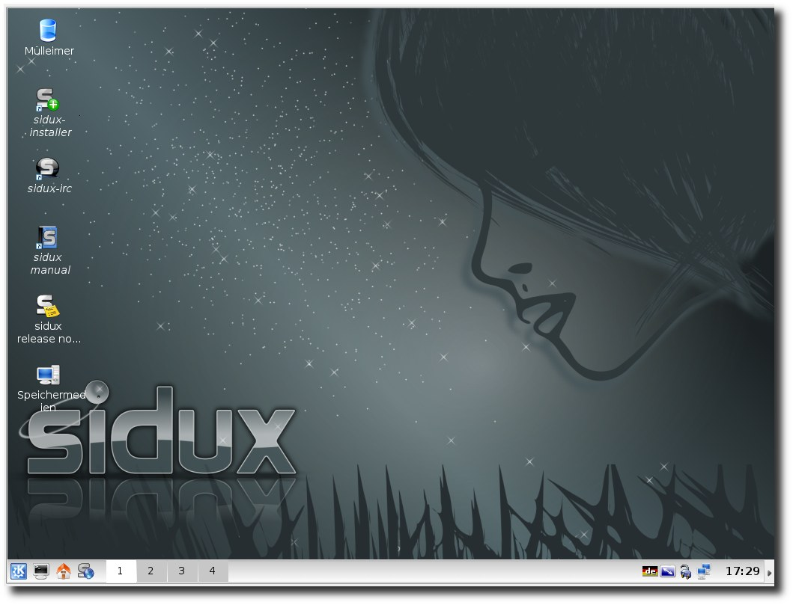
Der sidux-Desktop.
Startmöglichkeiten
Wie oben erwähnt, basiert sidux auf Debian Unstable/Sid und enthält 100 % freie Software (Link). Es können insgesamt vier Abbilder von den vielen Spiegelservern (Link) rund um den Globus geladen werden: zwei Architekturen, 32-bit (i686) und 64-bit (amd64), sowie KDE-Full oder KDE-Lite, wobei sich die KDE-Versionen nur an der Anzahl der mitgelieferten Programme unterscheiden. sidux kann als Live-CD gestartet werden und per Installer auf Festplatte oder USB-Stick komfortabel installiert werden. Verschiedene Bootparameter können eingegeben werden, so u. a.
- toram, womit die Live-CD in den RAM-Speicher geladen und das CD/DVD-Laufwerk freigegeben wird,
- fromiso ist wesentlich schneller als der Live-CD-Modus,
- persist speichert diverse Nutzereinstellungen.
Der Installationsmanager.
Ein genauer Blick
Als Standard-Arbeitsumgebung wird KDE genutzt, der Fenstermanager Fluxbox (siehe ,,Meine Welt mit Fluxbox'' dort (Link)) kann als Alternative zu KDE ausgewählt werden. Nachträglich können die Arbeitsumgebung Xfce oder Fenstermanager wie FVWM2 installiert werden. Wer sich entschieden hat, sidux auf seine Festplatte zu installieren, kann dies mit dem HD-Installationswerkzeug nach Beantwortung diverser Fragen zu Nutzernamen, Root-Passwort, Partition, Netzwerk und der Installation von nicht-freien Quellen per Meta-Paket-Installer innerhalb kürzester Zeit tun. Je nach System und sidux-Version dauert dies nur zwischen 4 bis 15 Minuten, bei älteren Systemen etwas länger. Paketmanagement
Es gibt keinen grafischen Paketmanager; es wird empfohlen, APT zu nutzen. Von Paketmanagern wie Synaptic und aptitude wird dringend abgeraten, da diese in Debian Unstable/Sid in der Vergangenheit nur Probleme mit der Paketbasis verursachten. Für Debian Stable und Debian Testing gilt dies jedoch nicht. Die Debian-Datenbank beinhaltet derzeit zirka 20.000 Pakete, welche über die Konsole als Root mit einem einfachen # apt-get update # apt-get install <paketname>
installiert werden können, Abhängigkeiten werden direkt mit aufgelöst (siehe ,,Paketverwaltung - von APT und RPM'' in freiesMagazin 03/2008 (Link)). Ein # apt-cache search <paketname>
zeigt, ob das Paket in APT vorhanden ist, falls nicht, kann man auch Pakete von außerhalb der Debian-Datenbank installieren, indem man in sidux eine Textdatei namens <name>.list erzeugt, dort die Adresse der gewünschten Datenbank einträgt und diese unter /etc/apt/sources.list.d/ speichert. Ein # apt-get update
genügt und die Pakete der neuen Datenbank sind vorhanden und es kann das gewünschte Paket installiert werden. Es gibt jedoch einen Meta-Paket-Installer, der die Installation verschiedenster Paketgruppen wie Büroprogramme, Lernsoftware, Spiele und Sprachen ermöglicht. 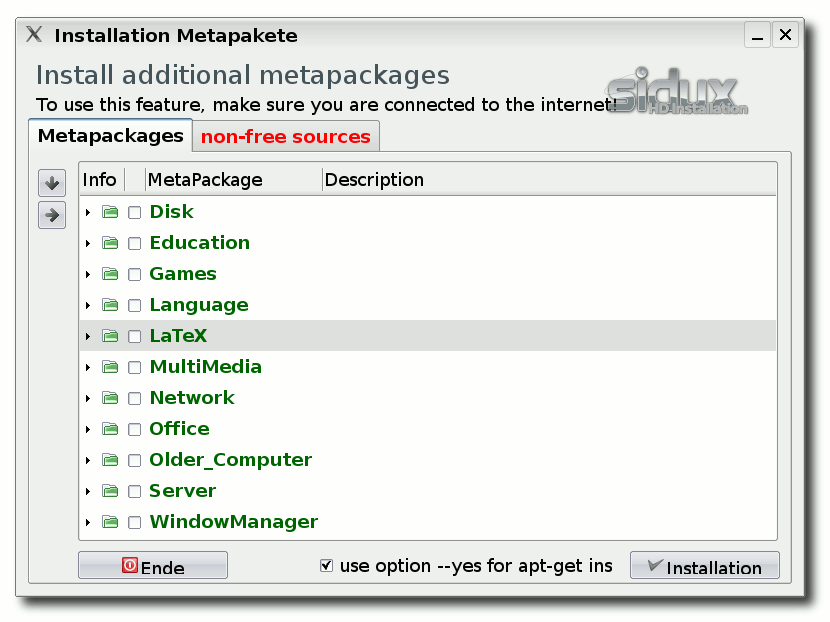
Meta-Paket-Installer.
sidux und seine Werkzeuge
Wer sidux installiert hat, braucht sich um neue Versionen und eine Neuinstallation dieser keine Gedanken mehr zu machen. Mit einem Skript namens ,,smxi'' ist ein sogenanntes ,,dist-upgrade'' (Aktualisierung des installierten Systems auf die neueste sidux-Version per APT, für alle Debian-Systeme verfügbar) auch für den nicht-versierten Nutzer ein Kinderspiel. Mit smxi können neue Kernel installiert, alte Kernel und nicht genutzte Kernelmodule entfernt, proprietäre Grafiktreiber von ATI und Nvidia, Office-Pakete und vieles andere installiert, ,,locales'' angepasst und nicht-freie Quellen eingetragen werden. Es wird nicht umsonst ,,das Schweizer Messer von sidux'' genannt. smxi wird über die Konsole als Root aufgerufen, wechselt dann in Runlevel 3 (ohne grafische Oberfläche), wo es nochmals als Root per smxi aufgerufen wird. Alternativ drückt man Strg + Alt + F1 , um in Runlevel 3 zu gelangen und startet dort smxi als Root. Ein dist-upgrade sollte mindestens alle zwei Wochen ausgeführt werden, damit es keine Probleme mit den Abhängigkeiten gibt - Debian Unstable/Sid entwickelt sich sehr schnell. Auch hier gibt es ein zusätzliches Helferlein, ,,Hermes'' genannt, welches bei dist-upgrade-Warnungen in Aktion tritt, wenn man ihn zuvor aktiviert. All dies ist aber auch dem Handbuch zu entnehmen, ein Muss für jeden sidux-Neuling! Nützlich ist auch das für sidux entworfene Kontrollzentrum, ein grafisches Werkzeug, mit welchem diverse Einstellungen vorgenommen werden können, wie z. B. Auflösungseinstellungen, welche Dienste beim Booten gestartet werden sollen oder welcher Webbrowser verwendet werden soll. Auch das Netzwerk kann damit konfiguriert, aktualisierbare Software angezeigt und auch ein neuer Kernel oder Kernelmodule damit installiert werden. Das sidux-Kontrollzentrum ist im KMenu unter ,,System'' zu finden oder kann per siduxcc in der Konsole oder über Alt + F2 aufgerufen werden. 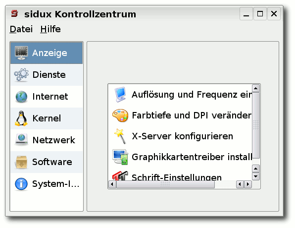
sidux-Kontrollzentrum.
Um das Netzwerk zu konfigurieren, gibt es auch das Werkzeug ,,Ceni'', welches in der Konsole läuft, aber auch für den ungeübten Nutzer geeignet ist. Gerade der Bereich WLAN / WPA wird problemlos unterstützt. Somit ist es auch dem ungeübten Nutzer möglich, sicher kabellos zu surfen. Es wird über Alt + F2 oder in Konsole per ceni aufgerufen und man folgt dort einfach den Anweisungen. Die Community
sidux' große Stärke ist seine Aktualität und die Gemeinschaft. Im Forum wird innerhalb kürzester Zeit versucht zu helfen und auch im Internet Relay Chat (IRC) ist rund um die Uhr Hilfe zu erfragen. Es sind immer kompetente Leute da, manchmal auch die Entwickler selbst, um Nutzern bei ihren kleinen und großen Problemen zur Seite zu stehen. Am 1. April 2007 wurde der sidux e. V. (Link) gegründet, um eine Anlaufstelle für unterstützende Nutzer zu haben, Messeauftritte zu koordinieren, Usertreffen zu organisieren und natürlich nicht zuletzt um die herausragende Arbeit der Entwickler zu unterstützen. Alles in allem baut sidux auf der Gemeinschaft auf, da viele Sachen wie die künstlerische Arbeit, die diversen Werkzeuge und die Hilfe im Forum/Wiki und IRC ohne die vielen Helfer nicht möglich wäre. sidux ist ein in sich stimmiges Projekt, es macht einfach Spaß, ein Teil dieser Gemeinschaft zu sein! Fazit
Wer sich nicht scheut, viel über sein System zu lernen, gern auch mal selbst Hand anlegt, aktuelle Software haben möchte und die Ratschläge aus Handbuch, IRC, Forum und Wiki befolgt, der hat mit sidux all das gefunden. Am besten testet man sidux zuerst per Live-CD und bei Gefallen installiert man es einfach auf der Festplatte. Die meisten werden von der Schnelligkeit und vom Komfort überrascht sein. Links
http://sidux.com
http://www.debian.org/doc/FAQ/ch-getting.de
http://sidux.com/Article416.html
http://www.debian.org/social_contract
http://sidux.com/Article303.html
http://sidux.com/module-PNphpBB2.html
http://sidux.com/module-pnWikka.html
http://www.freiesmagazin.de/freiesMagazin-2008-03
http://sidux-ev.de/
Zum Index
Die Reiche Debians von Björn Jilg
Neugierig beobachteten die Dorfbewohner den Neuankömmling. Wie immer wurde sehr schnell spekuliert, wo er denn herkäme. War er ein Wanderer zwischen den Welten? Kam er aus einem anderen Teil der Linuxwelt? Musste oder wollte er seine Heimat verlassen? Manche munkelten sogar, dass er direkt aus der Leere zwischen den OS-Welten kam und Debian die erste Nation war, die er je betrat. Auch wenn dies eher unwahrscheinlich war, kam so etwas durchaus vor und solche Fälle wurden in letzter Zeit auch häufiger. Vielleicht wohnte er auch schon in einem Reich von Debian. Nur eines stand fest: Er wollte eine neue Heimat finden und hierzu das große Orakel des Incoming befragen. Schon öffneten sich die Tore des Tempels mit der Aufschrift ,,Time is a neverending upstream'' und ein wenig zögerlich schritt der Fremde hindurch. Direkt hinter ihm schlossen sie sich wieder und die Bewohner wurden mit ihren Spekulationen zurückgelassen. Das Innere des Tempels bestand aus einer einzigen großen Halle, an deren Ende die Hohepriesterin in meditativer Haltung saß. Auf ihrer Stirn trug sie die Tätowierung eines magentafarbenen Wirbels und neben ihr ruhten die beiden heiligen Tiere des Tempels: Gnu und Pinguin. ,,Komm näher'' sprach die Priesterin mit freundlicher Stimme, und der Fremde wunderte sich, hatte er doch einen ,,geheimnisvolleren'' Tonfall erwartet - doch die weise Frau sprach ihn mit völlig ungezwungener, freundlicher Stimme an. ,,Du möchtest also von mir einen Rat, wo in unserer schönen Nation du dich niederlassen solltest?'' ,,Ja, großes Orakel. Debian gefällt mir sehr, die Offenheit und Freiheit dieses Volkes hat mich beeindruckt. Darüber hinaus, die vielen Wunder, die ich hier schon anschauen konnte. Doch bin ich mir unsicher, wo in dieser großen Nation ich eine Heimat finden sollte. Debian ist groß, die Anzahl seiner Reiche ist unüberschaubar und jedes ist anders. Bitte sagt mir, welches Reich das beste ist. Wo kann ich mich getrost niederlassen?'' Die greise Frau lachte schallend, sodass die Mauern der Halle leicht bebten. Ängstlich wich der Fremde einen Schritt zurück. ,,Debian hat unzählbar viele Reiche, wie du schon sagtest'', erwiderte die Priesterin. ,,Glaubst du, es würde so viele geben, wenn das eine Reich existieren würde, das am besten für jeden Einzelnen ist?'' ,,Nun gut'', die Stimme des Fremden wurde etwas leiser, ,,dann sagt mir bitte, welches das beste Reich für mich persönlich ist.'' ,,Diese Frage kannst du selbst am besten beantworten.'' ,,Aber ihr seid das Orakel! Wisst ihr denn nicht, in welchem Reich meine Bestimmung liegt?'' Wieder lachte die Priesterin, diesmal aber wesentlich leiser und mit einem freundlichen, wissenden Unterton. ,,Ich bin das Orakel von Debian. Ich sehe Dinge, lange bevor sie je ein anderer in Debian zu Gesicht bekommt. Das Schicksal der einzelnen Menschen jedoch kann nur der Einzelne selbst bestimmen. Wohl aber kann ich dir dabei helfen, deine neue Heimat zu finden. Ich werde dir nun ein wenig über einige Reiche erzählen, über ihren Aufbau und ihre Eigenheiten. Natürlich kann ich dir nicht sämtliche Reiche aufzählen, sonst könntest du dir gleich den Tempel als neue Heimat wählen. Am Ende musst dann du selbst entscheiden, wo auf Debian du in Zukunft weilen möchtest. Diese Entscheidung kann und will ich dir nicht abnehmen. Tief im Süden liegt das Reich Stabilitia, ein sehr starkes und stabiles Reich. Stabilitia ist eine gigantische Festung, die seit Generationen nahezu uneinnehmbar für Angreifer ist und auch den Naturgewalten zu trotzen vermag. Allerdings hat diese Sicherheit ihren Preis: Nur sehr langsam verbreiten sich Neuerungen in diesem Reich. Am Anfang jeder Dynastie wird Stabilitia von Grund auf erneuert, doch schon zu diesem Zeitpunkt sind die Neuerungen veraltet. Das liegt daran, dass die Bewohner von Stabilitia alle Baumaterialien und Handelswaren solange prüfen, bis sie sie als perfekt und sicher befinden. Vor der Küste Stabilitias liegen die Inseln der Testing-Bucht. Es mag sehr verlockend sein, sich dort niederzulassen. Im Gegensatz zu Stabilitia wird hier reger Handel getrieben, man erfährt mehr Neuigkeiten und genießt dennoch eine gewisse Stabilität. Auch hier muss jegliche eingeführte Ware überprüft werden, wenn auch lange nicht so ausgiebig wie auf Stabilitia. Doch Vorsicht, nicht immer ist ein Kompromiss die richtige Lösung. Wer sich in Testing niederlässt, darf sich nicht in trügerischer Sicherheit wiegen, nur weil er festes Land unter den Füßen hat. Schon oft wurden all zu leichtsinnige Bewohner einfach von ihrer Insel gespült. Dann gibt es noch den großen, mächtigen Ozean von Sid mit seinen Tausenden von Wundern, und selbst wenn es viele nicht glauben wollen: Auch dort wohnen Menschen. Damit wären die drei wichtigsten Reiche von Debian genannt.'' ,,Mit Verlaub'', fiel der Fremde ein, ,,was ist mit dem Reich Ubuntu? Ich habe gehört, dass es ebenfalls groß und mächtig ist und beständig weiterwächst'' ,,Ubuntu? Aber du hast mich doch nur nach den Reichen von Debian gefragt?'' Verblüffung zeichnete sich auf dem Gesicht des Fremden ab. ,,A... aber Ubuntu liegt doch in Debian ... oder?'' ,,Geographisch gesehen hast du Recht. Aber Ubuntu ist eine eigenständige Nation, auch wenn sie ohne Debian nicht bestehen könnte. Es ist eine künstliche Insel, die sich durch eine große braune Glasglocke komplett von der Außenwelt abgeschirmt hat. Nur zweimal im Jahr schwärmen Boote aus und holen sich Waren aus den verschieden Teilen Debians. Sie haben eine etwas andere Sprache und andere Gewohnheiten, die sich von allen anderen Teilen Debians unterscheiden. Daher ist es oft schwierig, Ubuntu-eigene Ware zu beziehen und ohne Weiteres zu benutzen. Die Bewohner der Insel Ubuntu leben in einer Welt, die durch die Glasglocke sicher und stabil zu sein scheint. Doch vergiss nicht: Glas kann zerbrechen. Du hast also die Wahl: Wenn dir ein stabiles Reich am wichtigsten ist, und es dich nicht kümmert, hinter den restlichen Reichen hinterher zu hinken, dann wähle Stabilitia als neue Heimat. Willst du mehr regen Handel treiben und dir nicht nur langerprobtes, solides, sondern auch neues, dynamisches Wissen aneignen, ohne aber festen Boden zu verlassen, so lasse dich auf den Inseln der Testing-Bucht nieder. Willst du die Illusion haben, dich auf dem Festland zu befinden, aber dennoch neuere Dinge benutzen als in Stabilitia, manchmal gar Moderneres als in der Testing-Bucht, und spielt es keine Rolle für dich, dafür die Grenzen Debians zu verlassen, so kannst du auch die Insel Ubuntu wählen. Wenn du allerdings die neuesten Dinge lernen willst und durch dieses Wissen jederzeit wehrhaft sein möchtest, wenn weniger Stabilität im Sinne von Starre, dafür Dynamik und dennoch, oder gerade deshalb, höchste Sicherheit dein Leben bestimmen sollen, dann entscheide dich für ein Leben auf den Wassern von Sid. Natürlich wäre es dann gut, allerdings nicht unbedingt erforderlich, wenn auch etwas Seefahrerblut durch deine Adern fließt.'' ,,Sid?'' erwiderte er erstaunt. ,,Dieser Ozean ist nicht dauerhaft befahrbar, ohne früher oder später darin umzukommen! Zumindest sagen das die Leute.'' ,,Nun,'' erwiderte die Seherin, ,,da haben sie nicht ganz unrecht. Kein Mensch der noch bei klarem Verstand oder kein todesmutiger Abenteuerer ist, befährt Sid in einem gewöhnlichen Boot. Mit einem sidux-Schiff ist das aber durchaus möglich.'' ,,sidux? Ich habe schon etwas davon gehört. Allerdings nur Gerüchte. Und damit lässt sich wirklich der Sid-Ozean befahren?'' ,,Oh ja. Sehr gut sogar. Natürlich darfst du nie vergessen, dass du dich auf hoher See befindest. Wer gar zu wagemutig ist und sich trotz aller Vernunft bei starkem Seegang über die Reling beugt, muss damit rechnen, von Bord geschleudert zu werden. Aber wenn du stets auf die erfahrenen Seeleute hörst und dich auf erprobten Routen bewegst, bist du an Bord eines sidux-Schiffes mindestens genauso sicher, wie in jedem anderen Reich von Debian. Und du erfährst die größte Freiheit, die du in diesen Landen überhaupt erfahren kannst. Es steht dir frei, zu tun, was du willst. Du kannst sogar dauerhaft vor Anker gehen und dein Schiff zu einem Hausboot machen. Aber hüte dich: Wenn du längere Zeit nicht mehr in See gestochen bist, solltest du das auch nie mehr tun. Die Zauber, die in die Schiffsplanken gewoben sind, verlieren an Kraft, wenn sie längere Zeit nicht mehr von Sids Energie umspült wurden, und so könnte das Schiff nach monatelangem Stillstand zerbrechen, wenn es wieder in unruhigere Gewässer kommt. Hüte dich auch vor dem Experimental Archipel. Die Wunder, die es dort zu sehen gibt, übertreffen noch die von Sid, doch wäge genau ab, ob der hohe Preis, den du dafür zahlen könntest, dies auch wert ist. Die Inseln des Archipels liegen im ewigen Nebel. Du kannst niemals sagen, ob eine Passage sicher ist, oder ob du im nächsten Moment an einem Riff zerschellen wirst. Daher gilt: Ein sidux-Schiff ist für Sid gemacht. Es schützt nicht nur vor Sids Energie, sondern auch durch diese. Ein Riss, der durch die eine Welle entsteht, kann durch die nächste Welle geschlossen werden. Es strebt immer eine gerade Position an, selbst bei unruhigem Wellengang ist es meist sehr angenehm und ruhig an Bord. Wird es zu unruhig, dann höre auf den Rat der erfahrenden Crew und du kommst sicher hindurch.'' Plötzlich öffneten sich die Tore des Tempels wieder wie von Geisterhand. Die Priesterin zeigte auf den Ausgang und sprach: ,,Ich habe dir nun alles gesagt, was du wissen musst. Wie du dich nun entscheidest, liegt allein bei dir ...'' Zum Index
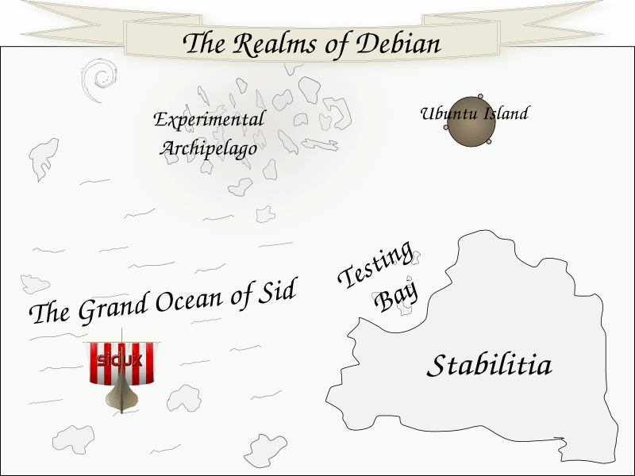
Die Reiche Debians.
Interview mit Xubuntu-Entwickler Cody Somerville von Bojan Bozic
Cody Somerville ist der neue Leiter der Xubuntu-Entwicklung. Er ist allerdings auch in den Bereichen Übersetzung, Support, Dokumentation, Marketing, Coding, Packaging und Entwicklung von Ubuntu beteiligt. Dies ist umso beachtlicher, da er erst seit 2005 an Ubuntu mitwirkt. Cody ist außerdem seit kurzem Mitglied der MOTU-Entwickler (Masters of the Universe). Diese verwalten die Ubuntu-Pakete aus dem Universe-Repository und entwickeln die Pakete weiter. Sein derzeitiges Projekt ist die Veröffentlichung von Xubuntu 8.04 ,,Hardy Heron'' Ende April.
|
|
freiesMagazin: Wie beteiligst du dich an Xubuntu?
Cody Somerville: Ich arbeite derzeit auf verschiedene Arten an Xubuntu. Der Hauptteil meiner Arbeit beinhaltet Packaging, Triaging und Bugfixing, Koordination von Aufwänden und Versuchen ein guter Leiter zu sein. An den meisten Tagen muss ich viele Informationen verarbeiten, um bestmögliche Entscheidungen sicher zu stellen. freiesMagazin: Wie viel Zeit investierst du täglich in die Arbeit an Xubuntu?
Cody Somerville: Vor ein paar Monaten war ich an einem Punkt angelangt, an dem ich 14-16 Stunden täglich investierte. Zur Zeit bin ich jedoch vollzeit angestellt, was die Anzahl an Stunden, die ich für Xubuntu aufwenden kann etwas einschränkt. freiesMagazin: Wirst du für die Arbeit an Xubuntu bezahlt?
Cody Somerville: Nein, die Zeit, die ich in die Xubuntu-Entwicklung investiere, wird nicht entschädigt. Wie auch immer, ich hoffe, dass dies eines Tages anders sein wird. :) freiesMagazin: Wann und wie kamst du zu Xubuntu?
Cody Somerville: Ich musste alte Hardware verwenden (300 MHz mit 128 MB RAM) und nachdem ich verschiedene Distributionen ausprobiert habe und mich in Ubuntu verliebt hatte, probierte ich Xubuntu aus, um zu sehen, ob ich die Performance erhalten würde, die ich brauchte, um Linux auf meinem Desktop zu verwenden. Das war 2005. freiesMagazin: Woran hast du für Hardy gearbeitet?
Cody Somerville: Während des Hardy-Veröffentlichungszyklus war mein primärer Fokus auf die Entwicklung von Xubuntu Distributionen gerichtet, während vorhergehender Zyklen war ich mehr auf Community-Entwicklung, Dokumentation und Testing fokussiert. Ende März wurde ich zum Xubuntu-Leiter ernannt und übe nun auch diese Rolle aus. Teamleiter zu sein, erfordert von mir eine Panoramaansicht zu erhalten, um sicher zu sein, dass alle Komponenten des Projekts sich prächtig entwickeln. freiesMagazin: Was sind deine Pläne für Hardy+1?
Cody Somerville: Hardy+1 (Intrepid Ibex) wird rocken! Bevor der Hardy-Zyklus zu Ende ist, werden wir eine klare Vision für Intrepid und alle weiteren Versionen haben. Jetzt, wo Xfce4 über einen fixen Releasezeitplan nachdenkt, kann ich mir vorstellen, eine gute Beziehung zu den Xfce4 Entwicklern aufzubauen, damit wir unsere gegenseitigen Entwicklungszyklen unterstützen können. freiesMagazin: Welche Funktionalität würdest du gerne an Xubuntu erweitert/verbessert sehen?
Cody Somerville: Mir würde eine verbesserte Desktop-Politur gefallen. Bessere Integration, mächtigere Programme und bessere Performance. Spezifischer würde ich sagen Samba-Browsing und einfacheres Desktop-Sharing. freiesMagazin: Beteiligst du dich auch auf andere Arten an FLOSS?
Cody Somerville: Ja, ich war auch an vielen anderen Open-Source-Projekten und -Communities beteiligt. Ich persönlich liebe MUD (Multi-User Dungeon) und leite auch ein kleines Team von Entwicklern, welche eine Library für den Gebrauch mit lpmuds entwickeln. freiesMagazin: Welche Desktop-Umgebung verwendest du und was gefällt dir besonders daran?
Cody Somerville: Klarerweise Xfce4, aber ich verwende genauso GNOME auf bestimmten Maschinen. freiesMagazin: Welche Anwendungen verwendest du täglich?
Cody Somerville: Firefox, gedit, Pidgin, XChat, OpenOffice.org, FUSE und das Terminal. freiesMagazin: Welche Workstations hast du und wie heißen sie?
Cody Somerville: Ich habe drei Workstations. Ihre Namen sind (gereiht nach Alter) Serenity, Veracity und Mercurial. freiesMagazin: Was trinkst du während deiner Arbeitszeit?
Cody Somerville: Für gewöhnlich Rootbeer und Saft. freiesMagazin: Wie sieht dein Desktop aus?
Cody Somerville: Hier ist ein älteres Foto, aber mein Desktop sieht noch immer gleich aus. :) 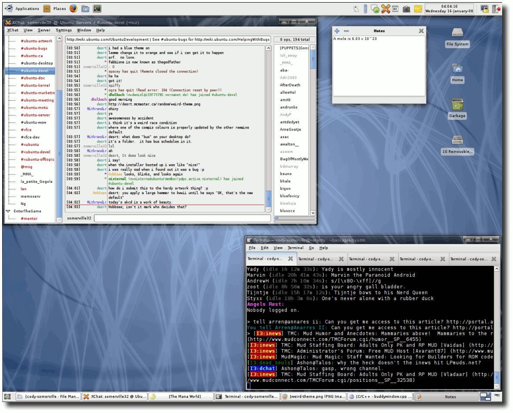
Der Desktop von Cody Somerville.
freiesMagazin: Wie sieht dein Arbeitsplatz aus?
Cody Somerville: Ich arbeite an verschiedenen Plätzen, in diesem Moment sitze ich gerade in einem Café. Persönliches
freiesMagazin: Wo wurdest du geboren/bist du aufgewachsen?
Cody Somerville: Ich wurde geboren und lebe noch immer in Fredericton, New Brunswick, Canada. freiesMagazin: Hast du Geschwister?
Cody Somerville: Ich habe zwei Schwestern und einen Bruder; Natasha, Kristie und Curtis. freiesMagazin: Welche Erinnerungen hast du an deine Kindheit?
Cody Somerville: Ich habe oft auf der Schaukel in der Schule geschaukelt und vorgegeben ich wäre Starfox. :) freiesMagazin: Verheiratet, vergeben oder freigegeben zur Adoption?
Cody Somerville: Ich bin frei für ein gutes Zuhause. freiesMagazin: Hast du Kinder oder Haustiere?
Cody Somerville: Ich habe im Moment weder Kinder noch Haustiere. Bevor ich in die weite Welt zog, hatte ich einen Hund (Maggie) und drei Katzen (Oscar, Kitty und Bud). freiesMagazin: Welche Events/Sehenswürdigkeiten würdest du Besuchern deines Landes empfehlen?
Cody Somerville: Ich würde ihnen nicht nur empfehlen Kanada zu besichtigen, sondern auch mich selbst gleich mitzunehmen! Habe bisher nur einen kleinen Teil von Kanada gesehen, aber ich persönlich bin sehr stolz auf mein Land und die schöne Landschaft. Wenn du meine Heimatstadt, Fredericton, besuchst, empfehle ich das Harvest Jazz and Blues Festival, welches jeden Herbst stattfindet. freiesMagazin: Wofür kannst du dich begeistern?
Cody Somerville: Wissenschaft und Technologie sind meine Leidenschaften. Ich liebe es zu lernen, zu erforschen und zu experimentieren. Das Potential, als Person zu wachsen, ist es, was mich motiviert, egal was ich mache. freiesMagazin: Was bedeutet Erfolg für dich?
Cody Somerville: Ich muss zugeben, dass ich meine Ziele oft ein bisschen zu hoch ansetze, aber ich werde besser darin. Für mich bedeutet Erfolg das Positive, das ich aus einer Sache/Tätigkeit mitnehmen kann. freiesMagazin: Wen bewunderst du am meisten und warum?
Cody Somerville: Ich bewundere/liebe meine Mutter. Obwohl wir nicht immer perfekt zurechtkommen, liebe ich sie bedingungslos. freiesMagazin: Was machst du in deiner Freizeit?
Cody Somerville: Meine Freizeit wird in persönliche Projekte (Xubuntu eingeschlossen) und Entspannen mit guten Freunden investiert. freiesMagazin: Welche Bücher hast du in letzter Zeit gelesen?
Cody Somerville: In den letzten sechs Monaten habe ich nicht so viel gelesen wie ich gern hätte, aber ich konnte es bewerkstelligen ein paar exzellentere literarischere Werke zu konsumieren; ,,A tale of two cities'' von Charles Dickens, ,,Brave New World'' von Aldous Huxley, ,,Dreamcatcher'' von Stephen King, ,,Breakfast of Champions'' von Kurt Vonnecut, ,,Cat's Cradle2'' von Kurt Vonnecut, ,,Speak like a CEO'' von Suzanne Bates und ein paar andere. Zur Zeit lese ich ,,Head First Object Orientated Analysis & Design'' vom O'Reilly Verlag. Nach dem Lesen von ,,Head First Design Patterns'' habe ich begonnen systematisch den Rest der Bücher dieser Serie zu kaufen - sie sind großartig! :) freiesMagazin: Welche Filme hast du in letzter Zeit gesehen?
Cody Somerville: Ich erwische mich jedes mal dabei, jedes Jahr die meisten der ,,Top Movies'' zu sehen, obwohl ich nicht der große Movie-Fan bin; Resident Evil, The Mist, I am Legend ... die Liste geht weiter. freiesMagazin: Welche Musik magst du?
Cody Somerville: Ich mag viele verschiedene Musikgenres wie Alternative, Soft Rock, Pop, Indie, Trance, House, klassischen Rock, Country usw. freiesMagazin: Welches sind deine liebsten technischen Geräte?
Cody Somerville: Hmm ... zählt Linux auch? :) freiesMagazin: Lieblingszitat?
Cody Somerville: ,,Batteries not included.'' freiesMagazin: Lieblingsessen?
Cody Somerville: Ich genieße Pizza mit Fleisch (oder Hawaiipizza) - typisch, nicht? Ich liebe es zu essen (obwohl man das nicht sagen könnte, wenn man mich ansieht). freiesMagazin: Lieblingscomic?
Cody Somerville: Dilbert und xkcd mag ich sehr. freiesMagazin: Bitte empfehle eine Nicht-Ubuntu Website!
Cody Somerville: Ich würde die Dilbert- (Link) und xkcd-Seiten (Link) empfehlen! :) Oder du könntest lpmuds.net (Link) besuchen, um mehr über MUDs rauszufinden. :) Links
http://cody.zapto.org
http://www.dilbert.com/fast/
http://xkcd.com/
http://lpmuds.net
Zum Index
Veranstaltungskalender
Jeden Monat gibt es zahlreiche Anwendertreffen und Messen in Deutschland und viele davon sogar in Ihrer Umgebung. Mit diesem Kalender verpassen Sie davon keine mehr. Hinweis: Ein Strich (-) als Angabe bedeutet, dass diese Information zur Zeit der Veröffentlichung noch nicht vorhanden war.
| Anwendertreffen | ||||
| Datum und Uhrzeit | Ort | Treffpunkt | Termin steht fest? | Link |
| 05.05.08, 19:30 Uhr | Krefeld | Limericks | ja | http://wiki.lug-kr.de/wiki/LugTreffen |
| 05.05.08, 20:00 Uhr | Gütersloh | Zur Weberei | ja | http://lug-owl.de/Events/ |
| 06.05.08, 18:00 Uhr | Marburg | Jornal | ja | http://www.mr-lug.de/ |
| 06.05.08, 19:00 Uhr | Köln | ZAIK/AFS | ja | http://www.uni-koeln.de/themen/linux/index.html |
| 07.05.08, 19:00 Uhr | Augsburg | ACF | ja | http://www.luga.de/Treffen/Termine/ |
| 07.05.08, 19:00 Uhr | Luwigsburg | VfB-Gaststätte Tamm | ja | http://linuxwiki.de/LugLudwigsburg/Treffen |
| 07.05.08, 20:00 Uhr | Herford | Recyclingbörse | ja | http://lug-owl.de/Events |
| 07.05.08, 20:00 Uhr | Offenburg | Deutscher Michel | ja | http://www.freiesoftwareog.org/ |
| 08.05.08, 18:00 Uhr | Zürich | ZHdK | ja | http://informator.vmk.zhdk.ch/GnusUndPinguine |
| 08.05.08, 19:00 Uhr | Dortmund | Kronenstübchen | ja | http://ubuntu-do.de/ |
| 09.05.08, 19:00 Uhr | Kreuzlingen | InetCenter | ja | http://www.linuxtreff.ch |
| 10.05.08, 18:00 Uhr | München | Cafe Forum | ja | http://forum.ubuntuusers.de/topic/60824/ |
| 12.05.08, 20:00 Uhr | Paderborn | Feuerstein | ja | http://lug-owl.de/Events |
| 13.05.08, 19:00 Uhr | Lüneburg | Comodo | ja | http://luene-lug.org/wp/ |
| 13.05.08, 19:00 Uhr | Wolfsburg | Institut für Industrieinformatik | ja | http://www.lug.wolfsburg.de/ |
| 14.05.08, 19:00 Uhr | Hessigheim | Pizzeria Neckartal | ja | http://linuxwiki.de/LugLudwigsburg/Treffen |
| 14.05.08, 19:00 Uhr | Langen | Alte Scheune | ja | http://www.lalug.net |
| 14.05.08, 19:30 Uhr | Eisenach | Cafe Spiegler | ja | http://lug-eisenach.de/ |
| 15.05.08, 20:00 Uhr | Marburg | Jornal | ja | http://www.mr-lug.de/ |
| 16.05.08, 19:00 Uhr | Kreuzlingen | InetCenter | ja | http://www.linuxtreff.ch |
| 19.05.08, 19:30 Uhr | Bielefeld | Unimax | ja | http://lug-owl.de/Events/ |
| 19.05.08, 19:30 Uhr | Krefeld | Limericks | ja | http://wiki.lug-kr.de/wiki/LugTreffen |
| Anwendertreffen (Fortsetzung) | ||||
| Datum und Uhrzeit | Ort | Treffpunkt | Termin steht fest? | Link |
| 20.05.08, 20:00 Uhr | Fulda | Academica Fulda | ja | http://lug.rhoen.de |
| 21.05.08, 19:00 Uhr | Luwigsburg | VfB-Gaststätte Tamm | ja | http://linuxwiki.de/LugLudwigsburg/Treffen |
| 21.05.08, 20:00 Uhr | Herford | Recyclingbörse | ja | http://lug-owl.de/Events |
| 21.05.08, 20:00 Uhr | Rheda-Wiedenbrück | Jägerheim | ja | http://lug-owl.de/Events |
| 22.05.08, 19:00 Uhr | Dortmund | Kronenstübchen | ja | http://ubuntu-do.de/ |
| 23.05.08, 19:00 Uhr | Kreuzlingen | InetCenter | ja | http://www.linuxtreff.ch |
| 24.05.08, -:- Uhr | Leipzig | Conne Island | - | http://forum.ubuntuusers.de/topic/68320/ |
| 26.05.08, 20:00 Uhr | Detmold | Zum Neuen Krug | ja | http://lug-owl.de/Events/ |
| 26.05.08, 20:00 Uhr | Ottobrunn | Weinstube | ja | http://www.lug-ottobrunn.de |
| 27.05.08, 19:00 Uhr | Lüneburg | Comodo | ja | http://luene-lug.org/wp/ |
| 28.05.08, 19:00 Uhr | Hessigheim | Pizzeria Neckartal | ja | http://linuxwiki.de/LugLudwigsburg/Treffen |
| 28.05.08, 19:30 Uhr | Eisenach | Cafe Spiegler | ja | http://lug-eisenach.de/ |
| 30.05.08, -:- Uhr | Essen | Unperfekthaus | - | http://forum.ubuntuusers.de/topic/134265/ |
| 30.05.08, 19:00 Uhr | Kreuzlingen | InetCenter | ja | http://www.linuxtreff.ch |
| 02.06.08, 19:30 Uhr | Krefeld | Limericks | ja | http://wiki.lug-kr.de/wiki/LugTreffen |
| 02.06.08, 20:00 Uhr | Gütersloh | Zur Weberei | ja | http://lug-owl.de/Events/ |
| 03.06.08, 19:00 Uhr | Köln | ZAIK/AFS | ja | http://www.uni-koeln.de/themen/linux/index.html |
| 03.06.08, 20:00 Uhr | Marburg | Jornal | ja | http://www.mr-lug.de/ |
| 04.06.08, 19:00 Uhr | Augsburg | ACF | ja | http://www.luga.de/Treffen/Termine/ |
| 04.06.08, 19:00 Uhr | Luwigsburg | VfB-Gaststätte Tamm | ja | http://linuxwiki.de/LugLudwigsburg/Treffen |
| 04.06.08, 20:00 Uhr | Herford | Recyclingbörse | ja | http://lug-owl.de/Events |
| 05.06.08, 19:00 Uhr | Dortmund | Kronenstübchen | ja | http://ubuntu-do.de/ |
| 06.06.08, 19:00 Uhr | Kreuzlingen | InetCenter | ja | http://www.linuxtreff.ch |
Wenn Sie ein Anwendertreffen bekanntgeben wollen, schreiben Sie eine E-Mail mit den Infos an .
| Messen | ||||
| Veranstaltung | Ort | Datum | Eintritt | Link |
| Linux Tag | Salzburg | 06.05.08 | frei | http://www.linuxwochen.at |
| Linux Tage | Wien | 15.05.-17.05.08 | frei | http://www.linuxwochen.at |
| Open Expo | Karlsruhe | 25.05.-26.05.08 | 10 EUR | http://www.openexpo.de |
| LinuxTag | Berlin | 28.05.-31.05.08 | 9 EUR | http://www.linuxtag.org |
| Linux Tage | Eisenstadt | 30.05.-31.05.08 | frei | http://eisenstadt.linuxwochen.at/ |
| Linux Tage | Linz | 27.06.-29.06.08 | frei | http://www.linuxwochen.at |
| FrOSCon | Sankt Augustin | 23.08.-24.08.08 | 5 EUR | http://www.froscon.de |
Konventionen
An einigen Stellen benutzen wir Sonderzeichen mit einer bestimmten Bedeutung. Diese sind hier zusammengefasst:
| $: | Shell-Prompt |
| #: | Prompt einer Root-Shell - Ubuntu-Nutzer können hier auch einfach in einer normalen Shell ein ,,sudo'' vor die Befehle setzen. |
| : | Kennzeichnet einen aus satztechnischen Gründen eingefügten Zeilenumbruch, der nicht eingegeben werden soll. |
| ~: | Abkürzung für das eigene Benutzerverzeichnis /home/BENUTZERNAME |
Vorschau
freiesMagazin erscheint immer am ersten Sonntag eines Monats. Die Juni-Ausgabe wird voraussichtlich am 1. Juni unter anderem mit folgenden Themen veröffentlicht:
- Circular Applications Menu - Jetzt geht's rund
- In der Box: Interview mit Henrik Kinnunen
- Firefox für Anfänger
Zum Index
| Impressum | |
| freiesMagazin erscheint als PDF und HTML einmal monatlich. | |
| Redaktionsschluss für die Juni-Ausgabe: 21. Mai 2008 | |
| Redaktion, Satz und Layout | |
| Eva Drud (ViSdP) | |
| Dominik Wagenführ | |
| Kontakt | |
| Postanschrift | freiesMagazin |
| c/o Eva Drud | |
| Rübenkamp 88 | |
| 22307 Hamburg | |
| Webpräsenz | http://www.freiesmagazin.de |
| Logo-Design | |
| Arne Weinberg | |
| Lizenz | GNU FDL |
| Korrektorat | |
| Mathias Menzer | |
| Thorsten Schmidt | |
| Dominik Wagenführ | |
| Erscheinungsdatum: 4. Mai 2008 | ||
| Erstelldatum: 7. Juli 2008 | ||
| Autoren dieser Ausgabe | ||
| Hans-Joachim Baader | ||
| Adrian Böhmichen | ||
| Bojan Bozic | ||
| Martin Hähnel | ||
| Björn Jilg | ||
| Christoph Langner | ||
| Tania Puls | ||
| Thorsten Schmidt | ||
| Dominik Wagenführ | ||
| Nachrichtenschreiber dieser Ausgabe | ||
| Hans-Joachim Baader (hjb) | ||
| Michael Berger (mbe) | ||
| Mathias Menzer (mme) | ||
| Dominik Wagenführ (dwa) | ||
| Arne Weinberg (awe) | ||
| Veranstaltungen | ||
| Ronny Fischer | ||
Wenn Sie freiesMagazin ausdrucken möchten, dann denken Sie bitte an die Umwelt und drucken Sie nur im Notfall. Die Bäume werden es Ihnen danken. ;-)
Mit vollem Namen gekennzeichnete Beiträge geben nicht notwendigerweise die Meinung der Redaktion wieder.
Zum Index
File translated from TEX by TTH, version 3.79.
On 7 July 2008, 22:25.